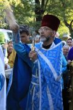
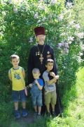

Страницы авторов "Тёмного леса"
Пишите нам! temnyjles@narod.ru
В августе произошло таинственное событие, которое осталось незамеченным для многих из нас: завершился земной путь одного мало кому известного человека. Какой ответ пришлось этой душе держать во время прохождения воздушных мытарств, мы знать не можем, в нашей власти только молиться за человека, который в своей земной жизни сделал немало такого, в чем приходится раскаиваться - рано или поздно. Как, впрочем, многим из нас...
Каждому из нас, проживающих свой земной путь, кажется, что век, отмеренный ему, долог, если не бесконечен, мнится, что дела, совершаемые нами, способны что-то остановить или затормозить, повернуть вспять... Часто ли мы задумываемся, что над всеми живущими довлеет Промысл Божий, мудрый и непреложный? Вспоминаем ли мы, что каждому один на один предстоит держать ответ перед Господом? Знаем ли мы, что скажем, чем оправдаемся за той чертой, за которой - вечность?..
...Из недавнего прошлого прямо в нашу убаюканную совесть доносится голос народа, отвергшего Бога, разрушившего храмы, ведущего непримиримую борьбу с "опиумом для народа", - наш голос:
Весь мир насилья мы разрушим
До основанья, а затем
Мы наш, мы новый мир построим -
Кто был ничем, тот станет всем!..
Как радостно мы забыли те недавние времена, когда у руля стояла Коммунистическая партия Советского Союза во главе с Генеральным секретарем ЦК КПСC, дважды Героем Социалистического Труда и трижды Героем Советского Союза, орденоносцем и автором бессмертных книг Леонидом Ильичем Брежневым!
Смело, товарищи, в ногу!
Духом окрепнем в борьбе.
В царство свободы дорогу
Грудью проложим себе...
Неужели не помните пятилетки - Решающую, Определяющую, Завершающую, когда пятилетний план доблестно выполнялся в четыре года, когда победными реляциями были ознаменованы очередная битва за урожай или комсомольская стройка.
И Ленин такой молодой,
И юный Октябрь впереди...
Субботники, демонстрации, собрания, обращения... Страна "в едином порыве" строила страну победившего социализма под звуки бравурных маршей:
Сегодня мы не на параде,
А к коммунизму на пути.
В коммунистической бригаде
С нами Ленин впереди...
Стоит заглянуть в зеркало нашей памяти, и уже не так легко нам осудить того, кто противился возвращению храмов молодым православным общинам. Это были люди, убежденные в своей правоте, твердо знавшие, что с прошлым покончено, выросшие и возмужавшие в эпоху воинствующего атеизма.
Сегодня поколение этих людей уходит, время неумолимо придвигает старость и тот, последний рубеж, за которым не бывает неверующих.
Настоятель Преображенской церкви пос. Михнево протоиерей Валерий Клинов в июле проводил в последний путь человека, судьба которого неразрывно связана с историей этого храма...
Преображенская церковь была построена по благословению святителя Филарета, митрополита Московского на месте деревянной Никольской церкви, прихожанами которой были жители не только самого села Мясное (на месте которого стоит современный пос. Михнево), но и деревень Екиматово, Михнево, Астафьево и Старокурово.
10 июля 1866 года святитель дал благословение на строительство Преображенского храма с приделами во имя свт. Николая и вмч. Димитрия Солунского. Работа закипела, и в 1874 году церковь была построена.
В XIX веке Преображенский храм входил в состав 3-го церковного округа Серпуховского уезда. После революции он разделил судьбу многих церквей России.
В 1939 году церковь была закрыта. Во время войны в ней размещался склад военного обмундирования. После войны церковь переоборудовали под кроватную фабрику. В 1960-е годы была снесена колокольня церкви. Для того чтобы собрать желающих поучаствовать в этом деле власти пообещали сохранившийся кирпич раздать участникам разборки колокольни. Многие михневские дома построены на фундаменте, возведенном из церковного кирпича, который был добыт при разборке колокольни. Вплоть до 1991 года в церкви размещалась "кроватная фабрика", один из цехов Видновского завода по производству металлических изделий. Здесь изготавливались кровати для больниц, воинских частей.
К тому времени вокруг церковного здания были построены всевозможные каменные цеха и склады. С левой стороны располагалась котельная, увенчанная высокой трубой. За храмовыми стенами размещались склад, сушильня и механический цех. Пол был полностью разрушен станинами станков. Из потолка торчала труба вытяжки. В помещении, оставшемся от колокольни, размещалась трансформаторная подстанция. На месте престола стоял большой чан с краской, в которую погружали детали кроватей, а затем через Горнее место транспортером доставляли в сушильню. Здание церкви было совершенно неузнаваемо, так что местные жители даже не предполагали, что у них в поселке Михнево когда-то был храм.
Решением Ступинского совета депутатов, принятым в 1991 году церковные здания и сооружения передавались Православной Церкви. Но директор "кроватной фабрики" не торопился расстаться с производственными площадями, не спешил демонтировать оборудование. И хотя в храме уже проходили богослужения, он еще в 1993 году отчаянно бился за каждую постройку, считал, что община обязана возместить стоимость переделок и новых построек. Охране было выдано строгое предписание посторонних на территорию не пускать. В те годы настоятелем храма был иерей Валерий Приходченко. Назначено время молебна, прихожане собрались, а настоятеля охрана не пропускает. Отец Валерий без всякого ущерба для высоты своего сана перелезал через забор, чтобы служба в храме началась вовремя. И под исковерканными стенами храма победно и уверенно звучало:
Царю Небесный, Утешителю, Душе Истины,
Иже везде сый и вся исполняяй,
Сокровище благих и жизни подателю...
Надо знать этого священника, чтобы не удивиться подобному факту.
Медленно, с огромными трудностями храм обрел тот величественный вид, который сегодня радует глаз и напоминает о былом великолепии. Тем временем тот самый директор кроватного цеха вышел на пенсию. В свой час Господь призвал и его. Родственники решили, что покойного необходимо отпеть в церкви... Той самой церкви.
Протоиерей Валерий Клинов, который знал покойного раба Божьего Валерия при жизни, отпевать усопшего не отказался, свой долг выполнил. Но сказал, что само по себе отпевание в храме еще не является "пропуском" в Царство Небесное, не становится гарантией спасения души. Пока мы живы, у нас есть время задуматься о бессмертии своей души, а потом - все в руках Божиих... Священник прочитал разрешительную молитву, благословил и проводил усопшего до ворот храма.
В покоищи Твоем, Господи,
Идеже вси святии Твои упокоеваются,
Упокой и душу раба Своего...
9 марта 2009 года в понедельник 2-й седмицы Великого поста на 71 году жизни скончался митрофорный протоиерей Космо-Дамиановской церкви г. Королева (бывш. г. Калининград Московской обл.) о. Георгий Рзянин.
...Еще во вторник на предыдущей неделе он проникновенно читал за службой в храме канон св. Андрея Критского, в среду 4 марта отслужил Литургию Преждеосвященных Даров и причастился Святых Христовых Таин. Казалось, ничто не предвозвещало близкой кончины пастыря, хотя батюшка уже второй год мужественно переносил тяжелую болезнь...
Детство протоиерея Георгия проходило в трудные военные и послевоенные годы в г. Моршанске на Тамбовщине. Отец его Василий Павлович Рзянин (1909-1979) вернулся с фронта с орденом, Но был тяжело контужен и ранен в голову. В суровые годы войны многие наши соотечественники после пресловутых безбожных пятилеток стали хотя бы тайком обращаться к Богу, и молитва веры спасала их от смерти. К сожалению, не все они воцерковлялись, не все становились церковными людьми. Как только миновала смертельная опасность, иные опять отходили от веры, уподобляясь "морской волне, ветром поднимаемой и развеваемой" (Иаков, 1, 6). Но Василий Павлович не только сам с детства оставался человеком церковным, но и детей своих - пять дочерей и двоих сыновей - воспитывал в христианском духе, регулярно посещал с ними церковные богослужения, был членом церковной двадцатки. Особую роль сыграла также бабушка по отцу Параскева Ивановна (+1959). Как драгоценную реликвию хранил Василий Павлович небольшое Евангелие, подаренное ему святителем Лукой Войно-Ясенецким в трудные годы.
Молитва веры принесла свои плоды, и в 1953 году, после 7 класса Георгий, старший из семерых детей поехал в Москву поступать в духовную Семинарию, но получил отказ: юношей моложе 17 лет в Семинарию не принимали.
Продолжая учебу в школе, Георгий исполнял на клиросе послушание чтеца, помогал в работах по храму и уже после окончания средней школы в 1956 году был зачислен в 1-й класс Московской Духовной Семинарии.
В середине 50-х годов промелькнула было надежда на восстановление церковной жизни в стране. В войну открывались храмы, военнослужащим вернули погоны, был значительно увеличен прием во все появившиеся тогда духовные учебные заведения. Четверть века не было в стране ничего подобного, но отыскались как-то уцелевшие "осколки роскоши" - преподаватели "старой закалки". С каким восхищением и любовью вспоминал о. Георгий об этих редких одаренных людях, умело передававших знания и духовный опыт столь разноликой аудитории с различным уровнем общего и религиозного образования, а порой и вовсе без оного, с одним только желанием быть при церкви. Уже на приходе о. Георгий передавал нам, клирикам помоложе, крупицы этих знаний.
Приведу только один характерный пример. В старых служебниках в диалоге молящихся друг о друге священнослужителей (после Великого Входа) священник обращается к диакону: "Дух Святый найдет на тя и сила Вышняго осенит тя", хотя логичнее же диакону как младшему по чину обращаться ко священнику с этими словами (см. Лк. 1, 35). Эта неточность была исправлена в новых служебниках совсем недавно, несколько лет назад, а о. Георгий указывал нам на нее по опыту Духовной Академии на четверть века раньше.
Семинаристы, успевшие уже побывать на срочной службе в армии, отмечали сходство церковных и военных заведений: строгий распорядок дня, беспрекословное подчинение старшим, общая форма одежды... Даже незастегнутая верхняя пуговица на кителе может вызвать замечание, вот только сроки пребывания подольше: четыре года в Семинарии да еще четыре года в Академии, если по всем правилам. Но поскольку на приходах священников не хватает, многие учащиеся принимают сан и уходят на приходское служение, завершая учебу на заочном отделении. На освободившиеся места досрочно переходили учащиеся младших классов.
Отец Георгий очень любил постигать богословские науки и не спешил уходить из Семинарии, а после ее окончания в 1960 году сразу же поступил в Духовную Академию.
В это время в стране полным ходом развернулась антирелигиозная кампания. Странная получалась обстановка хотя бы в той же Троице-Сергиевой Лавре, объявленной Государственным музеем-заповедником. Прямо пойдешь - в храмы с куполами и крестами попадешь. Туда, в принципе, пускают всех, хотя однажды я видел, как к офицеру в форме подошел человек в штатском, показал удостоверение, что-то ему долго объяснял, после чего офицер в храм не пошел. Дальше за храмами - музеи. Туда уж пускают абсолютно всех, но за деньги.
Если от входа пойти налево вниз, попадешь на монастырскую проходную, направо чуть в гору - проходная Духовной Академии и Семинарии. На проходной надо объяснить, к кому, куда и зачем идешь. Через старинную решетчатую ограду можно рассмотреть снующих туда-сюда семинаристов в черных кителях, иногда в подрясниках - так это выглядело и в 60-е годы и позднее, вплоть до 90-х годов. А что там, внутри, в самой Семинарии?
Да ничего особенного! Наверху учебные помещения, попросту классы с тремя рядами столов на двоих, внизу спальные комнаты с койками, кабинеты администрации, чуть подальше - столовая. По подземному переходу можно пройти в отдельно стоящее здание библиотеки. Слева к Семинарии примыкает импозантное здание XVII века - Царские Чертоги. Однако посетителей, как правило, больше всего интересуют обитатели музея-заповедника - семинаристы.
Лица у них на фоне черных кителей какого-то воскового цвета. Интересно, что они едят? Сколько спят? Сколько получают? У нас один шутник объяснил им, что в специальной комнате выдают деньги каждому по потребности, так что окончившие Семинарию уезжают отсюда на автомобилях.
Как-то мы в скверике убирали осенние листья. Послушание скучное, и я решил поразвлечься. Отделяюсь от группы семинаристов и подхожу к другой группе любопытствующих, по ту сторону ограды.
- Граждане, закурить не найдется?
Что там было - можете себе представить!.. Посыпались вопросы: кто и как сюда попал? Случайно? По призванию? По заданию? По протекции? По путевке комсомола? Талантливые? Бездарные? Образованные? Музыкальные? После школы? После армии? После вуза? Злые? Добрые?
Я всех успокоил словами одного видного иерарха: "Здесь граждане, нужен букет, букет нужен". Одним словом, хорошо поговорили. На прощанье чуть было песенку не спел: "Вышли мы все из народа, дети семьи трудовой, братский союз и свобода - вот наш девиз боевой".
Но это было уже в 1979 году, когда можно было и пошутить. А в начале 1960-х годов, когда по всей стране закрывались храмы и на всю страну осталось три Семинарии - в Москве, Ленинграде и Одессе, было не до шуток, особенно молодым людям, когда вся жизнь впереди и мрачные перспективы.
К тому времени о. Георгий познакомился со своей будущей матушкой Татьяной, и она приехала из Москвы к нему в гости с братьями-подростками. Да ей и самой было лет 15, не больше. Повел их семинарист (а может, он уже в Академии учился) по Лавре, рассказывает гостям о Лаврских достопримечательностях. Вдруг подходит человек в штатском, предъявляет удостоверение и просит пройти с ним в отделение: служителям культа запрещено проповедовать вне стен храма, да еще вдобавок несовершеннолетним. И правда, хоть бы китель семинарский, что ли переменил!
По дороге в отделение о. Георгий изловчился и сбежал. Заскочил он в одни двери Семинарии, а выскочил через другие. Потеряв его из виду, "конвоир" пошел к семинарскому начальству с требованием отыскать и выдать ему "экскурсовода". Слава Богу, предателей не нашлось! Иначе можно было не только с Семинарией распрощаться, но и с мечтой о священстве.
На IV курсе Духовной академии за две недели до Рождества Христова в Патриаршем Елоховском соборе Георгия Рзянина митрополит Пимен (Извеков) - будущий Святейший Патриарх - рукоположил во диакона. А 5 апреля 1964 года в храме Ризоположения на Шаболовке другой будущий Патриарх, тогда епископ Эстонский и Таллиннский Алексий рукоположил его во иереи.
Это были годы пика нападок на Церковь. В 1961 году была установлена новая организация приходского управления, когда настоятель вместе с клириками устранялся от участия в хозяйственном и финансовом попечении о храме, а старосты по существу назначались светскими властями и должны были быть полноправными хозяевами. Неизбежно возникали конфликты "двух медведей в одной берлоге", которые заканчивались переводом священников с одного прихода на другой.
С 1964 по 1979 г. о. Георгий являлся клириком Покровской церкви г. Москвы, а также других церквей Московской области. (в частности, в с. Гребнево, г. Серпухове, с. Заозерье, с. Шарапово, с. Куркино), где, помимо своей основной священнической деятельности, активно занимался ремонтно-строительными работами по сохранению храмов. Не случайно тема его кандидатской работы, которую он защитил в 1964 году, была: "Трудолюбие и его значение в подвиге христианина"! В те годы такая деятельность не приветствовалась советскими властями. Зато где бы он ни служил, оставлял по себе добрую память у прихожан.
На приходе в храме свв. Космы и Дамиана при настоятеле протоиерее Александре Славинском и втором священнике протоиерее Георгии Рзянине я прослужил диаконом почти девять лет.
В Москве с о. Георгием мы жили почти в одном районе. Когда меня в Епархии направили служить в Калининград, мне чуть не сделалось дурно: решил, что это бывший Кенигсберг. Меня успокоили: это самый близкий приход в Московской области. Это так, но ехать нужно еще аккурат через всю Москву, поэтому выезжали мы, как только открывалось метро.
Отец Георгий был человек аккуратный, никогда не опаздывал на службу. Однажды рано утром в подъезде его подкараулили грабители, решили забрать священнический крест. Но о. Георгий свой крест обычно оставлял в храме, в подряснике. С досады, что не удалось поживиться, и чтобы меньше было шуму, грабители затолкали его в подвальное помещение в подъезде, заперли и скрылись. Пришлось о. Георгию там стучаться, кричать, пока добрые люди его не выпустили. На службу опоздал, конечно, и пришлось делать сокращение за счет часов, тем более, что службу на буднях начинали с утрени, а в 11 часов дня начинались перерывы в движении электричек на Москву.
Староста храма сидела за ящиком и услышала разговоры бабушек, что, мол, "батюшка сегодня служил без часов"... В службе она абсолютно не разбиралась, но на всякий случай запомнила, что, очевидно, священник должен служить обязательно в наручных часах, как в епитрахили или поручах.
Прошло немало времени, возникло какое-то недоразумение, и о. Георгий указал старосте на упущение. А она ему в ответ:
- А вы тоже не все всегда выполняете!
- Как это я не выполняю? Служу, крещу, отпеваю. Что же еще?
- А вы без часов служите!
- Как без часов? - опешил о. Георгий. А потом засучил рукав: - Вот смотрите! Только на часы и гляжу, чтобы на электричку не опоздать!
С грустью посматривал иногда о. Георгий на сохранившееся надгробие священника о. Иоанна, "прослужившего в сем храме 42 года".
- А мне, пожалуй, напишут: "...прослужившего на 42 приходах"!
Но Бог милостив. Прослужил он на последнем приходе 30 лет, не дожив всего двух месяцев до своего 45-летнего юбилея служения в иерейском сане.
Служил он до последних дней - из последних сил, будучи уже тяжело больным. Дома он подготовил все необходимое облачение, ночью накануне тихонько самостоятельно вымылся. В понедельник сыновья и племянник - священники - вечером прочли молитвы на исход души. Батюшка попросил:
- Подымите меня! Как бы мне хотелось вздохнуть полной грудью!
Левую руку подал матушке, правой обнял ее за голову и на последнем выдохе сказал:
- Господи!..
Как-то не сразу сообразили, что он скончался.
Отпевали о. Георгия в среду 11 марта после Литургии Преждеосвященных Даров. Благочинный Пушкинского церковного округа о. Иоанн Монаршек, двадцать священников, три диакона - и храм, полный любящих и скорбящих прихожан. Похоронили его в ограде храма у алтаря.
Вечная память доброму пастырю!
10 лет сослуживший и 30 лет друживший
с о. Георгием Рзяниным
протоиерей Валерий Приходченко.
Многие из нас еще застали те времена, когда Православная Церковь в нашей стране была лишена возможности давать самые элементарные религиозные знания хотя бы своим членам и организовывать духовное воспитание подрастающего поколения.
Печальный опыт России подтвердил, что страна, где уничтожается христианская духовность, подвергается опасности развития самых примитивных языческих суеверий и душепагубных учений, возникающих как в ней самой, так и приносимых извне. Природа не терпит пустоты - Natura abhorred vacuum.
До поры до времени тоталитарному режиму искусственно кое-как удавалось сдерживать напор всех религий и суеверий. Но как только режим рухнул, возникшим религиозным вакуумом воспользовались, прежде всего, учения и религиозные системы, враждебные христианству и искажающие его.
Мы уже стали забывать намертво закрепленные суперклеем во всех вагонах электропоездов плакаты "Белого братства" с угрозами Марии Девы Христос о конце мира, слащавые мелодии секты "Аум Сенрикё" на центральном (!) радиовещании, назойливых бритоголовых кришнаитов с уродливыми челками, ушибленных монахинь "Богородичного центра", свидетелей Иеговы с белоснежными кипсмайлинговыми улыбками и многое тому подобное безобразие в самом прямом смысле слова. Впрочем, снова набирает обороты на НТВ кошмарное колесо "доктора" Кашпировского как залог того, что все еще может вернуться на круги своя. У адептов этих и подобных им бесчисленных неоязыческих тоталитарных сект налицо не только антихристианская направленность, но даже элементарная психическая неполноценность (адепт - лат. "достигший" - ревностный приверженец, последователь учения, направления, идеи). С другой стороны, в нашей, по существу православной, стране резко активизировалась деятельность баптистов и протестантов всех мастей, католиков. Пользуясь элементарным религиозным невежеством основной массы нашего населения, они устраивали, например, массовые крещения в общественных местах и учреждениях (кстати, часто принадлежащих государству). Опомнившись или не получив обещанных льгот, эти "новокрещенные" теперь приходят "перекрещиваться" в православные храмы.
Но у нас и своих невежд достаточно. Приведу хотя бы пару примеров. Будучи еще человеком гражданским, зашел как-то в храм со своим ребенком на руках. А у порога подходит ко мне бабушка и говорит: "Возьми ребенка на правую руку!" - "Извините, - говорю, - ребенок-то мой. Захочу - могу и на пол поставить!". Подходит другая: "Возьми ребенка на правую руку!". А первая ей и говорит, да так, чтобы и я слышал: "Не трогай его, он нервный!". Но я-то человек церковный и догадываюсь, откуда у них такое рвение. В конце службы, перед причастием, священник обычно просит взрослых с детьми на руках: "Возьмите ребенка на правую руку!" - для удобства, поскольку к Чаше подходят справа и идут к запивке после причастия налево, и лучше, если ребенок будет повернут к Чаше головой, а не ногами.
Если бы эти бабушки причащали своих внучат почаще, они бы, конечно, поняли, в чем дело. А они своих детей или внучат не причащают, зато очень любят поучать других. Есть такой грех у нас - видеть сучок в чужом глазу и слушать людей нецерковных.
Во время причастия у самой Чаши не крестятся, чтобы неосторожным движением руки не задеть Чашу со Святыми Дарами. И руку священника не целуют, пока не запили после Причастия (здесь же рядом) водой с просфорой. Как-то в молодости, наслушавшись наставления всезнающих церковных бабушек ("После причастия целый день руку священника не целуют!"), я не поцеловал после службы руку благословляющего меня архиепископа, благодаря чему попал в неловкое положение. А благословляющую руку священника мы целуем потому, что через нее получаем Причастие Тела и Крови Господа Иисуса Христа. У писателя Н.С. Лескова в повести "Соборяне" рассказывается, как молодой священник смутился, что знатная пожилая боярыня целует ему руку. "Не дергай руки, это не твою руку целую, а твоего сана". Классику нашу отечественную надо читать! Не надо быть профессиональным психологом, чтобы знать о том, что людям, особенно молодым в возрасте 17-20 лет при их стремлении к познанию мира, смысла жизни и активности духовного поиска свойственно очень слабое критическое отношение к себе, максимализм и повышенное доверие к "абсолютным духовным идеалам". Мы также знаем, что в последние годы огромное количество людей (в основном женщины) не смогли психологически устоять в идеологически изменившемся пространстве и, будучи дезориентированными, потеряли почву под ногами и попытались найти опору жизни в религии, хотя и были совершенно не осведомлены в самых элементарных вопросах. Попадая в объятия сектантских проповедников, они считали, что находятся в христианской православной среде.
Опять приведу пример. Попросила прихожанка освятить икону. Приносит барельеф, на котором изображена Венера перед зеркальцем, а вокруг нее пара амурчиков с крылышками летают. "Вы где это купили?" - "В церкви!" - "В какой церкви?" - "В Семеновском". А в те времена храм в Семеновском был еще закрыт, и работали там художники-кооператоры. "А я-то думала, что здесь изображена какая-то боженька", - сокрушалась простодушная старушка.
Ей-то, может, и простительно, а вот зашел я в 1989 году в свою "Alma Mater" - Московский Менделеевский университет (когда-то Ордена Ленина и Ордена Трудового Красного Знамени), а там в вестибюле висит громадное изображение св. великомученика Георгия на коне. Сам святой где-то вверху под куполом, зато змий внизу красуется, у всех на виду.
Вспомнил невольно юмористические стихи одного украинского дореволюционного поэта о том, как старушка ставит одну свечку святому Георгию, а другую - змию. Ей объясняют, что это же "нечистая сила". Но старуха не смутилась: "Не знаешь, где придется на том свете "куковать", надо всюду, как говорят, иметь приятелей ("треба всюду, як то кажуть, прыятелив маты"). В университете до свечей дело не дошло, но зато надписи носили явно языческую подоплеку: что-то о равновесии сил в природе, хочешь - любую из них выбирай. Пытался было я выяснить, что к чему, но крайнего так и не нашел. Не к ректору же обращаться!
Но, слава Богу, все это куда-то вдруг уползло... И только когда мне как бывшему студенту и аспиранту Менделеевка подарила книгу "Знатные лица в истории Менделеевского университета", я прочел в ней статью с портретом Митрополита Ювеналия и понял его роль в наведении порядка в нашем вузе.
Как только появилась возможность, в нашей Церкви был организован Отдел религиозного образования с тем, чтобы заполнить страшный пробел и утолить духовную жажду россиян. Отдел помогает по всей России открывать и организовывать работу воскресных школ, катехизаторских курсов, православных гимназий, церковно-приходских школ, печатает православную педагогическую литературу, устраивает конференции и педагогические чтения. Необходимо стремиться к познанию подлинного Православия, приобретая духовный опыт. Это не просто, сопряжено с многими трудностями. Религия - это тоже "иго и бремя", но которое "легко есть".
Сын Человеческий, придя, найдет ли веру на земле?
При этом радостном событии присутствовало полтора десятка жителей окрестных весей и... двое жителей села Каменищи. А где же остальные? Зимой село, понятно, пустует, но летом столько здесь отдыхающих, а осенью грибников, охотников, рыбаков. Апостольское правило гласит: "Если человек три раза подряд без уважительной причины не бывал на воскресной службе, то он сам себя отлучил от Церкви". Вспоминаю беседу на эту тему с одним бывшим коммунистом. Он был очень удивлен этим правилом: "А ведь у нас в партии тоже пропустившего три собрания подряд могли лишить партийного билета". Храм в жизни русского человека всегда имел особое значение. Хотя бы один человек из семьи в дореволюционное время старался быть на воскресной или праздничной службе. А если кто слышал колокольный звон, то оборачивался в сторону храма и крестился. Колокольный звон - это своего рода приглашение на Богослужение, зов свыше, напоминание о вечности и нашем долге перед Богом. Не случайно уже в первые годы безбожной власти был запрещен колокольный звон, а затем колокола и кресты вовсе сбрасывались с храмов и варварски уничтожались. А чтобы люди не почитали воскресные дни, в 30-х годах была введена шестидневная рабочая неделя. Выходными днями стали вместо воскресенья 6, 12, 18, 24 и последний день месяца (30 или 31). Однажды получился такой казус. 22 января - день смерти вождя мирового пролетариата Ленина пришелся на субботу. Этот день был нерабочим. (До хрущевских времен по старой традиции, как в святцах, почитались дни кончины почивших, а не дни рождения, как теперь по западному образцу). Так как очередной выходной приходился на понедельник 24 января, то вышло постановление перенести этот выходной с понедельника на воскресенье 23 января. "И впредь на все времена, если 22 января приходится на субботу, выходной переносить с понедельника 24 января на воскресенье 23 января". Эти календарные мучения продолжались несколько довоенных лет, пока опять не перешли на 7-дневную неделю. Но "работа адова была сделана". Сегодня, когда звонят колокола, люди чаще всего не придают этому особого значения или, иначе говоря, просто игнорируют зов Божий. Опытные люди, прошедшие испытание голодом, рассказывают (и врачи подтверждают), что если человек абсолютно не употребляет никакой пищи, а только пьет одну воду, то где-то на 4 день он на какой-то период перестает ощущать голод, так как желудок перестает выделять желудочный сок, и человек от грубой пищи может умереть. Точно так же иные крещеные люди настолько отвыкают от храма, что появляются в нем уже будучи в гробу. "По убогой, запущенной церкви ходит священник. Кадит и поет: "Хвалите имя Господне, хвалите рабы Господа". Поет и кадит, а рабов-то и нет: в церкви пусто". Так писал в начале прошлого века один известный писатель (В.В. Розанов). Ему вторит другой писатель-современник С.Н. Дурылин: "Елохово стало еще многолюднее: застроились бывшие пустыри, выросли дома в четыре, пять, в шесть этажей, открылись новые фабрики, а храмов в окрестности не прибавилось. Очевидно, народу не убыло, а прибыло в Елохово, но он начал уходить из храма в другую жизнь, вне всякого храма"... Люди не идут в храм и детей не ведут. Если за обычной воскресной службой, казалось, причащалось много детей, в основном из многодетных семей, то взрослых в храме мало - несмотря на то, что число потенциальных прихожан летом и осенью значительно возрастает. "Но Сын Человеческий, придя, найдет ли веру на земле?"
Мой духовный отец архимандрит Серафим (Тяпочкин, 1894-1982) приютил у себя в храме с. Ракитное на Белгородщине тяжко болящего священника Григория Сопина (1936-1990). Когда-то тот окончил первым учеником семинарию, умница, музыкально одаренный, но после травмы позвоночника (упал с лесов) мог передвигаться только на костылях. По молитвам о. Серафима он стал совершать требы, петь на клиросе и ещё был уставщиком, поскольку службы батюшка проводил строго по уставу. К нему ездили люди, скажу без преувеличения, со всей страны: он имел от Бога редкий, но тяжелый дар отчитывать бесноватых, а "сей же род изгоняется только молитвою и постом" (Мр 9, 29). Одна моя благочестивая знакомая, побывав у него на службе, сделала вывод: "Батюшка как батюшка, разве только что служит долго". По этой причине я, например, больше чем на пару дней к нему не приезжал, потому что дальше уже не молился, а боролся со сном. Чтобы не клевать носом, делая вид, что поправляю свечу, старался подольше подержать палец над пламенем. Приведу только такой пример: при отпевании нескольких покойников разрешительную молитву о. Серафим читал полностью каждому покойнику в отдельности. Создавалось впечатление, что батюшка не хочет уходить из храма. Конечно, в городе так служить невозможно. Да и в селе вряд ли кто станет так служить.
Как-то отец Григорий попросил меня навестить в подмосковных Химках болящую девицу Наталию Пижанову. Я тогда уже служил диаконом в Болшево (теперь г. Королев), это совсем другая железнодорожная ветка, а мне и без того почти каждый день приходилось ездить через всю Москву. Признаться, мелькнула у меня грешная мысль: "Сам калека и к калеке посылает". Но из уважения и жалости к великому страдальцу отправился я к другой, как выяснилось, ещё большей. Подробности о. Григорий мне не рассказывал: "Может, чем нужно ей помочь". Да только получилось так, что она мне грешному помогла и помогает уже даже после смерти. Надеюсь, что и вам, дорогие читатели, поможет.
Писать о людях святой жизни очень непросто, а порой и соблазнительно из-за несовершенства, попросту - греховности и пишущего, и читающего. Чудесным образом у меня оказались письма приснопамятных священника Григория и монахини Екатерины, которые позвольте Вам предложить ко дню памяти монахини Екатерины (+ 9 ф
Слава Богу за все! Боголюбивейший и всечестный о Господе отец Григорий, Христос Воскресе! Дерзаю написать вам свое убогое письмецо и попросить о себе ваших пастырских святых молитв. Адрес ваш мне дала Верочка Ершова, моя духовная сестричка, которая в прошлом году приезжала со своей мамой в Ваш храм. Вы тогда были больны. Напишу о себе. С 10 лет я неизлечимо больна. Лежу на одре болезни 27 лет, вся парализованная (в 1957 году перенесла детский паралич). С тех пор я и лежу недвижима, не могу даже сама на бочок лечь. Руки тоже парализованы, но с помощью Божией приспособилась лежа на спинке писать. Заболев, я около года пролежала в морозовской больнице с аппаратом искусственного дыхания - "железными легкими". Недуг полностью парализовал центр дыхания, и тогда, лежа в дыхательном аппарате, я возносила Господу свой детский лепет... Со мной была моя бабушка, она почти непрестанно находилась у моего одра, вернее, аппарата, шепотом читала молитвы. И они запечатлелись в моей детской памяти, и я стала читать молитвочки, молиться Господу и Его Пречистой Матери. Дыхание частично отошло, и в конце апреля 1958 года я вернулась домой. Мои бабушка и дедушка ухаживали за мной. (Моя мамочка умерла, когда мне было 7 лет. С отцом моим мама разошлась, еще до моего рождения, и я отца никогда не видела, знаю только, что он жив. Молюсь о его здравии и спасении). Возили меня иногда в церковь причащаться. Несколько раз летом 1958 года возили в Загорск, купали меня в целебном источнике Преподобного Сергия. Им очень хотелось, чтобы я встала. И я до 18 лет все думала, что буду ходить... Но с августа 1963 года состояние мое резко ухудшилось, я снова задыхалась. Без конца стала попадать в больницу, в отделение реанимации, дышать аппаратом. И, наконец, в 1976 году врачи мне сказали, что я сама дышать не смогу, навсегда буду прикована к аппарату искусственного дыхания. Я была обречена на пожизненное пребывание в больнице в отделении реанимации, куда доступ посетителям был строго запрещен. Ко мне пускали только одну мою бабушку, и то ненадолго. Ходила бабушка ко мне каждый день, превозмогая старость и немощь. Я стала проситься домой, хоть ненадолго. Врачи отпустили, дав ручной дыхательный аппарат. Дома несколько раз в день меня "раздыхивали" этим аппаратом. Но временами я снова задыхалась, и тогда возвращалась в реанимацию. И так без конца стала ездить туда-сюда... В мае 1979 года моя бабушка совсем стала изнемогать, у нее был рак мочевого пузыря. Ухаживать за нами было некому. Дедушка мой скончался в 1969 году. Врачи предлагали бабушке лечь в онкологическую больницу, а меня отдать в институт. Мы с бабушкой находились в великой скорби, все упование возлагали на Единого Господа, у Которого нет сирот. Я написала письмо своему духовному отцу в Троице-Сергиеву Лавру. Батюшка приехал, причастил нас с бабушкой. Послал двух своих духовных дочерей ухаживать за нами, убогими и беспомощными. Эти добрые женщины доупокоили мою бабушку до кончины ее. Она скончалась 22 мая 1980 года, будучи 80 лет. Один Бог знает, как тяжело нам с ней было расставаться. Перед кончиною моей бабушки я просила ее поручить меня, убогую сиротку, Самой Царице Небесной. Проси, родная, говорила я, чтобы Матерь Божия вместо тебя была мне матерью, и мне всегда будет хорошо. После кончины бабушки я чаще стала попадать в реанимацию: легкие еще более атрофировались, дыхание не восстанавливалось. Ручной дыхательный аппарат не помогал. День и ночь я умоляла Господа вывести меня из стен больницы и дать мне возможность жить дома. И вот в октябре 1980 года я узнала, что по молитвам моего духовного отца из московской реанимации мне домой привезли большой автоматический дыхательный аппарат РО-5. Искусственное аппаратное дыхание проводится через металлическую трубочку, которая постоянно стоит в дыхательном горлышке. Ночью за меня дышит один аппарат, а днем - другой. Сама я не могу дышать ни одной минутки. Нет слов, как тяжело и непостижимо жить без своего природного дыхания. Но чтение духовных книг, откровение помыслов, частое приобщение Святых Христовых Тайн оживляют и укрепляют меня. Одна благодать и неизреченная милость Божия держит меня еще в этом мире. Отче, я Ваше имя записала в свой келейный синодик и поминаю Вас на молитвенных правилах. Правила читают мои хожалочки, а я слушаю. А синодик свой я всегда читаю сама. Помолитесь и Вы обо мне, честный отче, воздохните обо мне у Престола Божия. Простите Бога ради за беспокойство и все погрешности моего письма. Покройте христианской любовью.
Милостию Божией многогрешная убогая Наталия 3/V-84 г.
Воистину Христос Воскресе! Дорогая моя многострадальная сестричка во Христе Наташа! Благодать тебе и мир от Бога Отца и Спаса нашего Господа Иисуса Христа! Невозможно без сострадания читать печальные страницы письма твоих нелёгких подвигов земных. Сразу же мне на память приходит житие преп. матери Марии Египетской. Там у старца Зосимы мало-помалу возникала мысль, что он уже достиг пределов духовного совершенства. Ангел Господень ему сказал, что ещё многое ему неизвестно и непостижимо и велел ему идти за Иордан в пустыню, чтобы видеть настоящие подвиги и достойных подвижников. Твоя жизнь, подвиги и страдания послужат благим уроком для меня грешного и немощного, как старцу Зосиме. В таком состоянии ты ещё так пространно и понятно изложила в письме. Понятно всё до единого слова, даже до единой буковки. Это письмо стоило тебе немалых трудов и усилий в течение двух дней. Благодарю тебя, дорогая моя, за святые молитвы, этими святыми молитвами Милостивый Господь укрепляет меня, посылает мне силы и всё необходимое для исполнения пастырского служения. Имеются у меня в Москве знакомые из среды духовной, а также и медики, которых я буду убедительно просить посетить тебя и оказать необходимую и посильную помощь. Эпиграфом к своему письму ты поставила предсмертные слова святителя Иоанна Златоуста. Дай Бог тебе терпения! У Святителя Иоанна Златоуста очень мало было в жизни радостей и очень много - скорбей, трудов, болезней, лишений и печалей. И он благодарит Бога за все эти скорби. Со страниц твоего письма я тоже читаю завет св. ап. Павла: "всегда радуйтеся, непрестанно молитеся, о всем благодарите" (I Солун. V, 16-18). Завершить свое письмо хочу пожеланиями тебе терпения, радости и крепости духа, великих и богатых милостей от Щедрого Подателя Бога. Будем хранить духовную связь. Считаю своим пастырским долгом "поминание о вас творить в молитвах моих" (Ефес. I, 16). От всей души желаю тебе немеркнущей пасхальной радости. С неизменной искренней почтительной любовью о Христе Воскресшем свящ. Григорий Воистину Воскрес Христос Пасха Христова 1984 г. Напиши, пожалуйста, имена умерших: своей дорогой мамочки и любимой бабушки.
Нет Тебя, Господи, краше, нет тебя, Господи, добрей! Дорогой и всечестной во иереях Божиих, о. Григорий, Христос Воскресе! Смиренно благодарю, дорогой отец, за Ваше доброе и такое теплое письмо. Дорогой батюшка, никакая я не подвижница, а грешный и немощный человек. Если я неделю не причащусь, то совершенно изнемогаю душой и телесно. Мой духовный отец благословил меня причащаться два-три раза в неделю, но у меня так часто не получается: не хватает знакомых батюшек. Но и еженедельное причащение, соединение с Господом - это великая милость Божия, которая меня, бездыханную, держит еще в этом мире. Душат меня бронхо-легочные полипы, которые подступают к трахеотомической трубке и закрывают в ней отверстие и доступ воздуха. Это бывает очень часто и всегда внезапно, в любое время дня и ночи. Не "продыхивают" даже дыхательные аппараты. Каждый раз еле отхаживают. С помощью электроотсоса резиновым катетером отсасывают у меня из легких мокроту, сгустки, корки. В сутки обычно раз по 30 (а когда бывает плохо, без счета). Процедура эта очень мучительная, иногда мне кажется, что я больше не выдержу. В глазах темнеет, сердце, голову бьет током, бывает, отсасывается кровь. Врачи говорят, что в легких у меня есть язвочки, во время отсасывания они травмируются и кровят. Сама я не смогла бы жить в таком состоянии столько лет. Не хватило бы человеческих сил и терпения. Поистине, "Сила Божия в немощи совершается". Во всем мне помогает Господь и Его Пречистая Матерь. Поэтому в своих письмах вначале я обычно пишу: Слава Богу за все! Сердечно благодарю за любовь и внимание к моему недостоинству. Простите Бога ради за все. Прошу Ваших святых молитв.
Милостию Божией недостойная болящая Наталия 15/V-84 г.
Христос Воскресе! Дорогая милая Наташенька! Получил твое второе письмо всё так же содержательное и любезное. Спаси Господи, только ты о нас заботою не тревожь себя. Господь тебя умудрил, укрепил, подготовил и укрепляет в несении нелегких телесных болезней в этой земной "юдоли плача". Поделился я с некоторыми москвичами твоим адресом. В ближайшем будущем должен посетить диакон о. Валерий или же его матушка. В дальнейшем должны быть и другие посетители, если будет на то Господня Воля. Болезнями Господь посещает и меня, но мои болезни, пока, Слава Богу, легче переносить. В своих убогих недостойных молитвах всегда помню тебя. Скоро мы распрощаемся с радостным Праздником Светлого Христова Воскресения. Приветствую тебя с грядущим праздником Вознесения Господня! А там уж скоро будем и Пятидесятницу праздновать и Духа пришествие. Желаю тебе, дорогая, духовной радости и всякого благополучия.
С неизменной искренней Почтительной любовью свящ. Григорий 26 мая 1984 г.
Все упование мое на Тя возлагаю, Мати Божия, сохрани мя под кровом Твоим. Дорогой батюшка о. Григорий, благословите. Смиренно благодарю вас за письмо, вашу фотографию, фото архимандрита Серафима Тяпочкина. Мои духовные сестрички ездили к старцу Серафиму и мне о нем рассказывали. В это воскресенье по вашему благословению навестил меня диакон о. Валерий. Он очень простой, общительный, впечатление такое, словно я его давно знаю. Спаси Вас, Господи, дорогой батюшка, за это доброе духовное знакомство! Сегодня я причастилась Святых Христовых Тайн. По благословению духовного отца, я имею на дому постоянно запасные Дары и священническое облачение с тем, чтобы почаще меня можно было причащать. Св. Дары находятся в отдельной келейке, куда нам не велено пускать никого из посторонних. О. Григорий, я так переживаю за своего духовного отца. По благословению Святейшего Патриарха он вот уже четвертый месяц несет послушание духовника русской духовной миссии в Иерусалиме. Переписка в эту страну очень затруднена. Когда едут в Иерусалим наши паломники, я стараюсь передать через них отцу письмо, но далеко не все берут. Везде хватает искушений. Дорогой о. Григорий, поздравляю Вас с грядущими праздниками Святой Троицы, днем Святого Духа, Образа Матери Божией "Споручницы грешных" и с наступающим Петровским постом. Пошли вам Господи Свой небесный мир и радость! Отче, напишите, пожалуйста, когда у Вас будет день Ангела? Простите Христа ради за все. С любовью о Господе.
Ваша сестра по скорби и утешению убогая Наталия 5/VI-84 г.
Благодать и мир Вам от Бога Отца и Спаса нашего Господа Иисуса Христа! Достойпочтеннейшая и глубокоуважаемая Наташа! Сердечно рад и благодарен за фотографию, теплые слова письма, поздравление и добрые благопожелания. Взаимно и тебя поздравляю с Петровым постом и желаю от Господа всякого благополучия. Рад вашей встрече с о. диаконом Валерием и доволен вашей беседой. Надеюсь, что это знакомство послужит взаимной духовной пользе. Теперь при встрече с москвичами некоторых из них прошу навещать тебя и даю, конечно, твой адрес. Принимай их по своему усмотрению и по своим возможностям, если только для тебя это не трудно. Стараюсь быть поосторожнее в выборе знакомых, ну а уж если что не так, ты меня великодушно прости. Нескольким лицам я давал твой адрес и просил навестить тебя. Все эти люди близкие к Церкви. Сердечно тебе благодарен за святые молитвы, они меня окрыляют и укрепляют. С воодушевлением всегда прочитываю твои глубоко со-держательные письма. Редко тебе пишу, за что прошу прощения. Ершовым пишу ещё реже, прошу тебя, Наташенька, передать их семейству святое приветствие и пастырское благословение. Стараюсь всех Вас не забывать "поминовение о вас творя в молитвах моих" (Ефес. I, 16).
С глубоким уважением и пастырской любовью свящ. Григорий 27 июня 1984 г. Ракитное.
Нет тебя, Господи, краше, нет Тебя, Господи, добрей. Многоуважаемый и всечестной о Господе отец Григорий, благословите! Вчера получила Ваше боголюбивое письмо, за которое спаси Вас Господи! Взаимно поздравляю Вас с наступающим Рождественским постом. Очень благодарна Вам и диакону Иоанну за молитвенное поминовение меня и моих родненьких. Я и они в этом очень нуждаемся. Состояние мое продолжает ухудшаться - совершенно задушивают полипы в легких. Милосердный Господь сподобляет меня ежедневно или через день причащаться. Это меня очень утешает и укрепляет. По немощи человеческой меня иногда пугает мысль, что я не выдержу своего креста. Но слова Писания "Сила Моя в немощи совершается" и то, что выше сил Господь ничего никому не дает, а если Он и дает, то Сам и помогает - являются для меня спасительным якорем в трудную минуту. Не прошу у Господа, ни жизни, ни смерти, а только терпение до конца и мирной христианской кончины. И Вы, добрый пастырь, вместе с диаконом Иоанном поусердней помолитесь обо мне, убогой. Сейчас для меня настало самое тяжелое время. Ежеминутно я могу отойти в вечность. Я частенько думала об этом - как будет происходить разлучение души с телом. И вот неделю назад мне было совсем плохо. Полип очень сильно задушивал. Потом мне немного стало полегче, я задремала и увидела себя стоящей у одра. Я стояла и смотрела на саму себя лежащую, уже совсем бездыханное тело. Возле - лежащее мое тело, что-то делали хожалки, но меня никто не видел, стоящую рядом с ними. Я удивлялась, как все быстро и незаметно произошло, без всяких болезненных ощущений и страхов. Я стояла и рассуждала о том, какая для меня самой, это была непостижимая тайна, вместе с тем меня объяло какое-то дивное спокойствие и радость. У меня не было никакого сожаления о земном. Когда же я очнулась и ощутила себя по-прежнему находящейся здесь, то признаюсь, меня охватила даже досада, сожаление о том, что это был только сон... Простите ради Бога за все. С любовью Христовой,
болящая Наташа с хожалками 25/XI-84
Благодать и мир Вам от Бога Отца и Спаса нашего Господа Иисуса Христа! Многоуважаемая и миленькая Наташенька! С радостью получил письмо и с глубокой скорбью сердечно прочитал о твоих страданиях. На всё да будет воля Божия, но мне не хотелось бы так скоро расставаться с тобою в этой земной юдоли плача. Теперь я всё чаще представляю себе твой относительно недолгий и весьма многострадальный земной жизненный путь. С самого раннего детства совсем мало радостей и много-много скорбей, болезней и страданий. Только Божественная Благодать и Помощь укрепляла тебя и неотступно была с тобою. Желал бы и я, худородный, унаследовать твое мужество и крепость. Моё сердечное приветствие твоим добрым неутомимым помощникам. В нашем Храме служит диакон Иоанн - душа добрая и благочестивая. Я ему прочитывал твои письма, он всегда молится о твоем здравии и о упокоении твоих мамы и дедушки с бабушкой. Получил я письмо от медсестры Анны Георгиевны. Сердечная благодарность ей за столь усердные внимание, труды и заботы. Передайте в Москву семье Ершовых мое святое приветствие. Приветствую тебя, Наташенька, и всех твоих помощников с приближающимся Рождественским постом. Христос Рождается... Пойте Господевы вся земля!!! С неизменной искренней почтительной любовью
свящ. Григорий 20 ноября 1984 г.
Слава Богу за все! Дорогая и боголюбивейшая матушка-игумения Магдалина, благословите! Получила я Ваше Рождественское поздравление. Спаси Вас Господи! Я очень тронута и обрадована Вашим христианским вниманием ко мне. Матушка, на одре болезни я нахожусь с десяти лет, а мне сейчас идет тридцать пятый год. Я могу лежать только на спине и левом боку, кормят меня из ложечки, я вся парализована. От долгого лежания мои легкие совсем атрофировались и перестали сами дышать. И вот, дорогая матушка, второй год я живу совершенно без своего дыхания. У меня в горлышке вставлена трубка, к ней присоединен дыхательный аппарат, который автоматически вдувает воздух в мои легкие - получается вдох, и выдувает воздух - получается выдох. Вот так, матушка, я и живу на этом свете, бездыханный человек. Конечно, матушка, дорогая, очень и очень тяжело жить на свете без своего дыхания. Всякое дыхание да хвалит Господа. А за меня дышит машина. Лежу и думаю иногда - все живое дышит, вдыхает свежесть воздуха, ощущает аромат цветов. О, какой это бесценный дар Божий иметь свое дыхание! Но за все слава Богу! Господь дал крест, Он и поможет донести до конца. Дорогая матушка, если Вас не очень затруднит, вспоминайте меня (в тайном постриге монахиню Екатерину) в своих святых молитвах. Очень буду благодарна, если вы по возможности будете радовать меня своими письмами. С любовью Христовой.
Ваша сестра по скорби и утешению многогрешная болящая Наталия 15/I-82 г.
Нет Тебя, Господи, краше, нет Тебя, Господи, добрей. Дорогая и благочестивейшая во игумениях матушка Магдалина, благословите! Хочу поблагодарить Вас, дорогая матушка, за пасхальное поздравление, ваши фотографии и духовные открыточки. К Пасхе я получила от Вас несколько писем. Очень тронута Вашим поистине христианским и материнским вниманием ко мне, убогой. Спаси Вас Господи за Ваше доброе отзывчивое сердечко. Поздравляю Вас с днем Вашего тезоименитства равноапостольной Марии Магдалины. От всей души желаю Вам, дорогая матушка, с Божией помощью стяжать цветы всех добродетелей Вашего Ангела Марии Магдалины, коими она угодила Господу. Дорогая матушка, самочувствие мое все ухудшается. Я все больше слабею, сильно кружится голова, по ночам не могу спать, так тяжело. Матушка, хоть иногда, по возможности, вспоминайте в своих святых молитвах ухаживающих за мной моих хожалочек и сестричек милосердия... Помолитесь о нас, добрая матушка, воздохните ко Господу о нашем недостоинстве. Я же Вас вспоминаю с сестрами обители на всех своих молитвенных правилах: полунощнице, Евангелии, псалтири. Общее правило читают хожалочки, я слушаю, а синодики свои я читаю сама. Простите Бога ради за все. С любовью Христовой
недостойнейшая во иноцех Екатерина 19/VII-83 г.
Все упование мое возлагаю на Тя, Мати Божия, сохрани мя под кровом Твоим. Всечестная и боголюбивейшая во игумениях матушка Магдалина, благословите. Бесконечно благодарна Вам, дорогая матушка, за заботу и внимание ко, мне убогой и ничтожной. Очень тронута вашими подарками, смиренно благодарю. Я постоянно ношу свой постригальный монашеский параман, но за давностью лет он стал уже совсем ветхиньким. Очень рада, что вы прислали мне новенький параманчик. Спасибо, спасибо, добрая матушка, за все, за все. Одна из моих бывших хожалочек, послушница Пюхтицкого монастыря, была у меня на днях, и гостила несколько дней по благословению игумении Варвары. Послушница много интересного рассказывала о трудностях и радостях монастырской жизни. Я ведь никогда не была в монастырях. Знаю об их жизни только из духовных книг и по рассказам богомольцев. Состояние моё плохое. Вчера меня по милости Божией пособоровали и причастили. Только и держит меня в этом мире частое приобщение Святых Христовых Тайн. Получила от своего духовного отца (он несет послушание духовника Горненского монастыря в Иерусалиме) письмо долгожданное. Молю Господа, если Ему угодно, чтобы мне дождаться, когда мой батюшка приедет в отпуск в Россию. Скучаю я очень без него. Много у меня есть хороших батюшек, которые меня причащают, наставляют. Но моего дорогого, родненького папочку (я так зову духовного отца) никто мне не может заменить. Дорогая матушка, я очень рада, что вы молитесь о моих хожалочках. Я и они молитвенно Вас с сестрами вспоминаем во всех наших келейных правилах. Простите Бога ради за все. Милостию Божией
убогая монахиня Екатерина 29/X-83 г.
Все упования на Тя возлагаю, Мати Божия, сохрани мя под кровом Твоим. Ваше высокопреподобие, боголюбивейшая и всечестная матушка игумения Магдалина, благословите. Смиренно благодарю за присланные лекарства и теплое письмецо. Взаимно всегда имею Вас в своем сердце и молитвенной памяти. Записала в свой синодик Вашу келейницу инокиню Веру и послушницу Раису. Дорогая матушка, хочу поделиться с Вами своей большой духовной радостью. По милости Божией дождалась я в отпуск своего духовного отца. Приехал он из-за границы на два месяца. Навестил меня два раза, на Казанскую пособоровал меня, моих матушек-хожалочек, некоторых своих духовных чад. А меня Милосердный Господь сподобил из его отцовских ручек принять Святых Христовых Тайн. А сейчас батюшка поехал к своим родным. Скоро, скоро папочка вернется в Святую Землю, будет нести данное Богом нелегкое послушание духовника Русской Духовной Миссии и, предстоя с трепетом и слезами у Гроба Господня, будет молиться за весь мир! Матушка, сегодня праздник Матери Божией Троеручицы и мой юбилей, исполнилось 27 лет моей болезни. И в этот же день 15 лет назад скончался мой дедушка, воспитавший меня, сиротку, вместе с бабушкой. Царствие Небесное. Самочувствие мое очень переменчивое, беспокоят легкие и сердце, частенько бывает ломота. Аппаратура моя пока, слава Богу, работает исправно. Завтра, если Господь сподобит, думаю причаститься. Духовник мой благословляет меня причащаться в неделю два-три раза. Матушка, дорогая, прошу у Вас прощения, благословения и святых молитв.
Ваша усердная молитвенница и сестра по скорби и утешению. Недостойная монахиня Екатерина с хожалками 25/VII-84 г.
Пою Богу моему, дондеже есмь! Дорогая и всечестная о Христе матушка игумения Магдалина, благословите. Спаси Господи, дорогая матушка, за ваше боголюбезное письмецо и посылочку. Чем я заслужила Ваше внимание и заботу, родненькая матушка! Награди Вас Милосердный Господь за Ваше доброе сердечко и христианскую любовь к моему убожеству. Дорогая матушка, состояние мое ухудшается, дни мои земные приближаются к концу... Каждый день душат бронхиальные полипы, поднимаются полипы вверх к трахеотомической трубке, закрывая доступ воздуха. Мой духовный отец велел мне готовиться к вечности, благословил мне составить список адресов и телефонов моих духовных друзей и благодетелей для извещения о моей кончине. В телеграмме будет указано мое мирское имя, так как мое монашеское имя мало кому известно. Таково благословение духовного отца. Родненькая матушка, день и час каждого в руках Божиих. И когда наступит мой смертный час, воздохните о мне, добрая матушка, с сестрами обители, о моей многогрешной, многострадальной душе, отходящей в вечность... Прошу о себе и в вечности Ваших святых молитв. Может, по милости Божией и по молитвам всех молящихся о мне, я еще и поживу в этом мире. Но у меня такие страшные легочные задыхания, что просто делается невмоготу. Поминаю Ваших родителей, протоиерея Германа и инокиню Татиану. Царствие им небесное! Низкий от меня поклон благочинной монахине Олимпиаде, записала ее в свой синодик. Прошу прощения за все заботы и хлопоты обо мне, убогой. Подарки мы все разделили между собой с хожалочками. Низко все трое кланяемся Вам в ножки, дорогая матушка. Спаси Вас Господи за все и за поздравления с днем Ангела. Я очень была рада, поговорив с Вами по телефону. Всегда молитвенно Вас помнящая
недостойная монахиня Екатерина с хожалочками. 23/IX-84 г.
Монахиня екатерина родилась 6 августа 1947 года, отошла ко Господу 9 февраля 1985 г. в альманахе "Христианос" (Рига, 1995) о ней сказано: "Говорила матушка екатерина мало, больше сама слушала или просила почитать акафист, иногда Писание. Но и без слов люди получали облегчение. Матушка екатерина уже в конце открыла Наталье Петровне свою тайну: духовный отец её (о. варфоломей) сказал ей как-то: "Знай, что ты ничего не понимаешь и не знаешь. Твое дело лежать и терпеть". Таково было его благословение. С тех пор она стала молчаливой.
25 января 2011 в день памяти святой мученицы Татианы, в связи со смертью насельника Белоцерковского мужского монастыря в честь Рождества Христова иеросхимонаха Амфилохия (Трубчанинова) в Спасо-Преображенском кафедральном соборе г. Белая Церковь было совершено соборное заупокойное богослужение, которое возглавил Высокопреосвященнейший Митрофан, архиепископ Белоцерковский и Богуславский. В надгробной проповеди архиепископ Митрофан выразил соболезнования по поводу смерти старейшего клирика епархии, который прожил 93 года. Владыка рассказал о жизненном пути иеросхимонаха Амфилохия, подчеркнув его терпение и любовь к людям. "Все, кто приходили к батюшке, получали наставления, совет или поддержку в своих жизненных проблемах. Старец долгое время болел, но никогда не роптал, оставшись верным Богу и Его Святой Церкви".
Иеросхимонах Амфилохий (Трубчанинов Николай Федорович) родился 16 мая 1917 в селе Борисовка Никопольского района Днепропетровской обл. В 1941 был принят в ряды Советской армии; военную службу проходил в Персии. В связи с болезнью в 1944 г. уволен с военной службы. В 1978 г. во Владимирском соборе Киева рукоположен в сан диакона и направлен в церковную общину в г. Васильков Киевской обл. В 2000 г. в Свято-Успенской Киево-Печерской Лавре был пострижен в монашество с именем Николай, в честь святителя Николая, архиепископа Мирликийского. 1 апреля 2002 в СпасоПреображенском кафедральном соборе г. Белая Церковь Преосвященнейшим Серафимом (Зализницким) рукоположен в сан пресвитера. В 2003 г. пострижен в великую схиму с именем Амфилохий, в честь преподобного Амфилохия Почаевского.
К сожалению, в некрологе получился заметный пробел в сведениях с 1944 по 1978 год. Именно в это время я часто встречался со своим знаменитым земляком Николаем Федоровичем, а попросту - Колей Борисовским, как его все называли по соседнему селу Борисовка, где он родился и проживал. Когда в безбожную предвоенную пятилетку были закрыты почти все храмы, меня тайком крестил пришедший из Борисовки престарелый священник о. Николай.
В войну и старые, и малые просили мира, начали открываться храмы, но ненадолго. Уже в конце 50-х годов началось массовое их закрытие, дабы успеть, по словам генсека Хрущева, показать к 1980 году последнего попа по телевизору. Ну а как же с Конституцией, позволявшей исповедовать любую религию или никакой? У нас вера не запрещена. Веруйте, но чтобы никто об этом не знал, особенно на работе. А храмы закрывали по самым разнообразным причинам. Говорили: была война, и люди от страха смерти обращались к Богу. А теперь, мол, верующих становится меньше и меньше. Церковные власти сами заинтересованы в укрупнении редеющих общин. Укрупняют же колхозы, совхозы, школы! Храмы закрывают, а доходы их растут, а соответственно взносы их в Советский Фонд Мира. Вот и священник соседнего храма дал подписку гражданским властям, что он в состоянии обслужить не только свой, но и соседние приходы, оставшиеся без священников (говорил ли он это в действительности, кто проверит?). А приходы остались без священников потому, что те систематически нарушали финансовую дисциплину: причащали умирающих на дому без справки от врача, что те действительно умирающие. Да еще и деньги клали себе в карман, а не в церковный ящик, и потом этими "левыми" деньгами расплачивались за доставку с водителем. Еще могли закрыть храм за несоблюдение санитарно-гигиенических норм, пожарной безопасности. Или как в Марганце: во вновь построенном молитвенном доме (старый храм фашисты взорвали при отступлении) 25 января 1962 года, в Татьянин день на потолке заметили трещину, и немедленно прекратили службу, "заботясь" о драгоценном здоровье молящихся. Всех удалили из храма, а иконы, утварь вывезли в неизвестном направлении. Открыть храм было проще простого. Для этого нужно двадцать человек православных (так называемая двадцатка) и два листка бумаги. На одном - список членов двадцатки с указанием адреса, места работы и года рождения. А на другом - общее заявление областному уполномоченному по делам религии. Он все это проверит, побеседует с зачинщиками и отправит в Киев, Киев - в Москву, в "Совет при Совете" (Совет по делам религии при Совете Министров СССР). Оттуда придет разрешение, когда от Двадцатки останутся рожки да ножки. Ведь членами Двадцатки, как правило, были одни пенсионеры, которые не боятся получить неприятности по службе, а то и вовсе потерять работу. Дальше срабатывала теория вероятности. Исходя из средней продолжительности жизни в нашей стране, за год-другой кто-нибудь да умрет. Редко, но бывали случаи, когда из Двадцатки выходили под нажимом властей, "по собственному желанию" ("Мы не требуем от вас отказываться от веры, а только выйти из Двадцатки"). Могли напомнить, где учатся и работают их дети, внуки, а то и вспомнить грехи предков. Одним словом, годами развлекались игрой в кошки-мышки. Открыть храм в те годы - все равно, что забрать у собаки из пасти кость. Нормальный человек не станет возглавлять эту Двадцатку. Бабушки упросили Колю взять на себя этот подвиг: "Ты же воевал, пойди орденами-медалями потряси!". Хотя были и такие, которые возражали, говорили: "Бесполезно! У Блюхера орден Красного Знамени за первым номером был, и то укротили!". Вообще, никто не ожидал, что Коля, комиссованный в войну из армии, тощий, в лице ни кровиночки, с пышной окладистой бородой и тихим голосом, сумеет выбить все бумаги для открытия храма. Пока он возился с бумагами, пока отвозил бумаги в Киев, местные власти сровняли храм с землей, а областной уполномоченный потребовал оформлять документы поновому. Ведь храм - это памятник архитектуры, и он должен быть восстановлен только на прежнем месте и только в прежних размерах. Николай Федорович в городе уже купил флакон красной туши для покраски лампад. Вынул он его с досады, открыл и крестообразно вылил тушь на голову уполномоченного: "Да вразумит тебя Господь!". Тот схватился за голову - и руки окрасились "кровью". Коля от волнения упал. Прибежала секретарша, видит: один лежит, другой в крови - и тоже упала. Дежурные милиционеры испугались: финка у него или нож? Вызвали милицию, скорую помощь: те не поймут, кого спасать. Лежат два трупа, один весь в крови бегает. Весь Облисполком поднялся на ноги, от входа до кабинета, в два ряда. Очутился Коля на месяц в буйном отделении психиатрической больницы. Взяли жидкость из позвоночника, руки-ноги отнялись, неделю лежал лицом вниз. Слава Богу, признали нормальным, врачи пожалели: все-таки на суде дадут срок, а из психушки навряд ли вернешься. Приговор суда: уплатить две с половиной тысячи рублей уполномоченному за порчу костюма и рубахи, полторы - за мебель и пять лет тюремного заключения. Освободился Коля уже после отстранения Хрущева, но храмы по-прежнему не открывались. Более того, священнику в единственном в округе молитвенном доме запретили пускать Колю на службу. Интересно, как это можно сделать, когда храм открыт для всех? Поэтому священник решил пускать его тайком в алтарь через боковую дверь, чтобы тот не показывался на народе. Я со священником когда-то работал на одном заводе, и тоже "тайнообразующе" заходил к нему в алтарь. Там я и встретил Колю после заключения, где он мне рассказал следующую историю. Когда он находился в заключении, обратил внимание на старика, все время молившегося. Однажды тот Коле и говорит: "Тебя посадили за то, что ты хлопотал насчет храма, а храмы ведь будут открывать". "Не может быть!" - возразил Коля. "Не веришь? В книжных киосках иконы будут продавать". Коля опять засомневался. Тогда старик указал на одного из заключенных: "Вот тому человеку дали 15 лет, а тебе 5, а ведь он выйдет раньше тебя". Когда Хрущева отправили на пенсию, этого заключенного сразу же и выпустили, а Коля продолжал сидеть. И поразмыслив, он тихонько спросил старца: "А что, власть поменяется, раз храмы будут открывать?" Тот отвечает: "Нет, власть, не поменяется, просто им скажут, и они будут открывать". "Интересно, как это им скажут? И кто же нами тогда правит?" "Господь нами правит" - сказал старик и заплакал. Рассказ Коли показался мне неправдоподобным. Я даже не стал уточнять, что за старик, и что дальше будет вообще. Теперь, читая воспоминания иеросхимонаха Амфилохия "Сила Креста Христова", я нашел следующие слова: "Когда я был в заключении, один батюшка мне сказал: "Ты доживешь до тех времен, когда детям будут преподавать Закон Божий. И это будут богоугодные дети". Интересно, почему он мне тогда, в алтаре, не сказал, что тот необычный старик был священником... Теперь у него уже ничего не спросишь, вечный ему покой и Царство Небесное.
Протоиерей Валерий Приходченко на страницах нашей газеты (N1, январь - февраль 2011 г.) рассказывал об удивительной судьбе монахини Екатерины (Натальи Пижановой), которая, несмотря на тяжкий недуг, всю жизнь хранила молитвенную радость и любовь к ближним. Сегодня о. Валерий рассказывает о женщине, которая ухаживала за матушкой Екатериной. Еще одна трудная судьба простой женщины, которая всю себя без остатка посвятила служению Богу и людям
У матушки Екатерины сподобился я побывать за несколько дней до ее кончины. Хожалочка Наталья Петровна сообщила по телефону, что хорошо бы приехать попрощаться. Лица матушки я не видел. Какая-то тетушка читала вслух псалтирь строго поцерковному. Очень мне тоже хотелось почитать, но я не решился ее перебивать. Постоял с четверть часа, попрощался с хожалочкой, а с матушкой - мысленно, и ушел. Отпевали матушку в Куркинском храме в честь Владимирской иконы Божией Матери, которую покойница особо почитала. Служило 8 священников. Единственный диакон - я грешный - стоял в народе. Поразмыслил, что украшением службы по своим певческим данным и внешнему виду стать не смогу, монашеского чина отпевания не знаю (в стране к тому времени почти не осталось ни монастырей, ни монахинь), да никто меня и не приглашал. Ведь по всем тогдашним жестоким драконовским законам священнослужители без особого на то разрешения властей не имели права служить на чужих приходах, где они не зарегистрированы. 8 священников на одной службе в те годы - целое ЧП. А уж вне храма, на кладбище, особенно если там нет "культовых зданий", священнику лучше было вовсе не показываться во избежание неприятностей. Слава Богу, на Руси не принято строго подчиняться букве закона. После похорон я не терял связи с Натальей Петровной. В 1989 году меня рукоположили во иерея и дали восстанавливать разрушенный храм в сельской местности к югу от Москвы, так что отлучаться от прихода было проблематично. Но в памятные дни я старался хотя бы поговорить с ней по телефону. В квартире она сохранила прежнюю обстановку. Приятно и грустно было посидеть у кроватки матушки Екатерины среди прежних икон и фотографий, под часами с кукушкой. Болящая очень тревожилась, когда они останавливались. Хожалочка быстро подтягивала гирьки и недоуменно спрашивала: "Зачем тебе, Наташа, время?" - "Когда кукушка откукует, я начинаю читать "Богородице Дево, радуйся..." до следующего боя через полчаса", - отвечала матушка Екатерина. И так все долгие годы болезни... С Натальей Петровной жила и ее сестра Евдокия Петровна. Последний раз я навестил их зимой 2009 года после службы в храме Знамения иконы Божией Матери в Химки-Ховрино, где настоятелем служит мой давний друг протоиерей Георгий Полозов. Сестрицы радостно меня приняли и открыли тайну, что Наталья Петровна давно уже монахиня Евлалия. По случаю праздника мы долго беседовали, и я отправился через всю Москву к себе на приход. К сожалению, это была наша последняя встреча: 24 марта 2010 года хожалочка монахиня Евлалия тихо и мирно скончалась. Накануне вечером сестрицы затеяли шутливый "детский разговор", кто первый умрет (обеим уже за 80 лет). - Наверное, ты меня похоронишь, сестрица. - Нет, уже скорее ты меня, дорогая. А на другой день матушка Евлалия и скончалась. Отпевал ее общий их духовный наставник, отец Варфоломей из Троице-Сергиевой Лавры. В последнюю нашу встречу матушка Евлалия как-то разговорилась о своей жизни, а кое-что потом дополнила и ее сестра Евдокия. Вот что мне запомнилось. Девичья фамилия их Зиновы. Родители Петр и Мария проживали в деревне Ольховцы Михайловского района на Рязанщине. Отец 1900 года рождения вернулся с гражданской войны после контузии раненый, обмороженный (воевал где-то в Финляндии), страдал припадками, прожил всего 42 года. От мамы свою болезнь до женитьбы он утаил, чем ее очень огорчил. Но она не стала от него уходить, пожалела как сироту с детства. Да и мама тоже была болезненная, скончалась от рака поджелудочной железы (1896-1951). После рождения третьей дочери Натальи (будущей монахини Евлалии) произошло чудесное исцеление отца от эпилептических припадков. Когда мама была беременна Натальей, ей приснился удивительный сон, будто пришли к ней два инока в белых одеждах. Мама их покормила, как было у них принято. Когда те собрались уходить, сказали: "Теперь просим вас к нам в гости!" - "А где вы живете?" - "За Оренбургом, в семнадцати километрах". Когда мама пересказывала свой сон отцу, две странницы, которых они приняли на ночлег, спросили: "А кто у вас больной?" - "Почему вы спрашиваете?" Они говорят: "Точно, у нас за Оренбургом в семнадцати километрах есть святой источник. Туда многие болящие ездят и исцеляются". Вот отец туда и поехал. Начал расспрашивать местных жителей про источник. Молодые ему говорят: "Точно, есть источник". А кто-то из старых говорит: "Да там такая же вода, как и везде! Стоило из-за этого в такую даль ехать!"... Тут отец и засомневался. Было это в декабре. А примета была такая: если сомневаешься, вода будет тебе холодной, а если искренне веришь, будет тебе тепло. Отцу с его сомнениями вода показалась невыносимо холодной. Вернулся он домой. Слег с воспалением легких, три недели проболел, но мучившие его всю жизнь припадки бесследно исчезли. Поистине, "жезлом железным накажу, но милости Моей не отниму от него". (2 Цар. 7, 14-15) И зажили они дружной семьей. Отец был отменным сапожником. Да только какая жизнь в колхозе была тяжелая в предвоенные годы! А в войну и того хуже. Детей было 5 девочек и один мальчик: Александра 1920 г.р., Любовь 1924 г.р., Екатерина 1926 г.р., живет в Коломне, Наталья 4.12.1928 г.р., Евдокия 14.03.1931 г.р. и Иван 1933 г.р. Старшие девочки Александра и Любовь, как только подросли, убежали от голода в Москву, благо не так далеко. За ними через так называемый "трудовой фронт" подалась и Екатерина с подругой Катей в Коломну на танковый завод. Наташа, Евдокия и Иван подрастали, работая в колхозе за палочки, как тогда назывались трудодни. Но главное - Бога не забывали. По воскресениям, как ни тяжело было, ходили с мамой, пока та жива была, в ближайший храм за 7 км пешком в село Малинки, даже зимой. В 50-е годы там служил вернувшийся из 10-летней ссылки священник Григорий Григорьевич Амелин. В хрущевские времена храм закрыли, а в 1988 открыли. При храме сохранилось много святынь. В 13 лет Наташе было видение: "Идут люди в храм Малинки, и я с ними. А там в алтаре - рядами гробницы стоят, раки с угодниками Божиими. Я споткнулась, а высокая, красоты неимоверной Жена говорит: "Слабая вера у тебя! Будет у тебя ребенок..." Я ручками глазки закрыла: "Не хочу я ребенка!" - "Не хочешь, а будет!" В 1951 году умерла мама. Брат Иван ушел в армию. Евдокия вышла замуж. А Наталья в 1956 году отправилась в Москву и приютилась у сестры Любы. У той тоже беда: муж умер, остался ребеночек 5 лет, работы нет. "Стою на службе и плачу. Вдруг из алтаря выходит владыка и прямо ко мне идет: "Что раба Божья плачешь?" "Работы нет, живу у сестры, помолитесь обо мне!" Он благословил меня, успокоил. А на другой день на заборе вижу записку: "Нужна домработница". Попала в дом священника. Но одна беда: сын священника пил. До этого была у них домработница, забеременела и ее прогнали. Убежала и я от них к сестре Любе. Даже свои лохмотья оставила. А хозяйка меня долго искала, хотела, чтобы я у них невесткой была. Наконец нас-таки нашла, но как увидела у нас в доме иконы, расплакалась и отошла от нас. До этого она не подозревала, что мы люди верующие и вольностей не позволим. Потом попала я в домработницы к писателям в Лесной городок (в Одинцовском районе) к Тамаре Владимировне. Соседка ее Берта Яковлевна очень меня жалела, внук ее стал после священником". Много было у матушки приключений и злоключений, о которых она рассказывала только своей сестрице Евдокии. И вот, наконец, по благословению своего духовного отца Варфоломея попала она к болящей Наташе (монахине Екатерине), которая жила тогда еще со своей тоже болящей бабушкой Варварой. "Где же ты до сих пор скиталась, мы так тебя заждались", - такими словами встретила ее Наташа. Наталья Петровна сразу же четко уяснила, что это та ее дочка, о которой ей было предсказано еще в детстве. К тому времени сама она уже обжилась, даже получила в Москве комнату. Все родственники и знакомые отговаривали ее, но она все оставила, ушла к болящим и ухаживала за ними до их кончины целых 8 лет. К тому времени Наташа уже приняла монашество вопреки воле бабушки. Та боялась, что болящая не сможет понести монашеский обет, молитвенное правило и даже грозила оставить ее. "Ну и оставь, Господь не оставит!" Тяжело ухаживать за лежачим больным, невольно вспомнишь знаменитые Пушкинские строки: "Но Боже мой, какая скука с больным сидеть и день, и ночь, не отходя ни шагу прочь". "Да что - за лежачим! Мы к этому сравнительно легко приспособились. А вот за бездыханным - не всякий выдержит. Сколько людей переменилось, не выдерживали нагрузок", - вспоминала Евдокия Петровна. Врач даже удивлялся: "Что за люди христиане! Бескорыстно ухаживают за больными". Я тоже удивился, что хожалочки через собес даже не пытались оформиться работниками по уходу за больной. "А кто будет ходить по инстанциям, когда от больной отойти нельзя". Еще при первом посещении матушки я обратил внимание, что она лежит лицом от окна. В одном из воспоминаний о ней я прочел следующее: "Было время, когда Наташа любила смотреть в окно, ее подвозили к нему в кресле-коляске. Однажды ей приснился сон, в котором Господь показал ей красоту Рая. Сон повторялся трижды. После этого она уже не хотела смотреть в окно, от мира отреклась". "Скоро уйду" - предупредила матушка Екатерина Евлалию. "А я как буду?" "Ты еще поживешь". 13 лет матушка Евлалия болела раком кишечника, перенесла операцию, исцелилась и умерла в старости, на своих ногах молитвами матушки Екатерины. Хоронили ее иеромонах Варфоломей из Троице-Сергиевой лавры и священник Игорь Бондарев.
Авдей Павлович Балакин - бывший начальник Криворожской Губернской ЧК в 1930 г. Родом с Черниговщины впоследствии жил по соседству с моей бабушкой Феодорой в г. Марганец. Как-то он хвалился моей тетушке: "Марфа, я по колена в крови стоял!" - не знал, что у той самой отец раскулаченный, а дед - поп, который скрывался до самой смерти от таких, как Авдей Павлович, а может, и от него самого. Как порой нужно быть осторожным, прежде чем хвалиться своими подвигами! В войну, естественно, он уехал в эвакуацию на Урал. Дома был знатным человеком, а там далече таких в военное время очутилось так много, что они начали нуждаться подобно блудному сыну (Лк. 15, 14). А те люди, которых они высылали в 30-е годы, там уже успели обжиться. Взял Авдей Павлович свою гимнастерку и пошел к ним менять хотя бы на ведро картошки. Дает ему мужик картофель и спрашивает: "Ну как, людей раскулачивал?" - "Да был грех!" - "За то, что ты признался, возьми еще ведро!" Вернулся Авдей Павлович с Урала другим человеком. Стал даже вспоминать, какой у них добрый был священник и как его, маленького Авдюшу, очень любил. После войны его жена со своей сестрой ходила та даже, кажется, в церковном хоре пела. Авдея Павловича, награжденного почетным именным оружием, не раз просили выступить в школе с воспоминаниями, но он так и не пошел. Даже нас, соседей, просили его уговорить - не помогло. Когда меня в 1961 г. Отчислили из института за отказ сдавать экзамен по научному атеизму, он очень искренне переживал: "Пропадет малый!" к счастью, хрущевские гонения на веру прошли без кровопролития и почти без арестов - в отличие от 20-х и 30-х годов. Единственная дочь его Раиса Авдеевна, учительница, жила при нем с внучкой Кларой. Какие-то непутевые были, могила отца в страшном запустении. Помню, как Авдей Павлович обижался на нее: "Какая же она хозяйка! Чай с сахаром внакладку!" (А надо было вприкуску - меньше расход). Приходилось экономить на всем.
Я в войну вообще о сахаре понятия не имел. Принес как-то дедушка Серега (когда я подрос, мне объяснили, что он - брат погибших в ссылке Трофима, отца мамаши, и еще других двух братьев - Гавриила и Иоанна) кусочек сахара и спрашивает меня: "Что это такое?" -"Мел", - говорю я. Родители у меня - портные, так что мел я у них видел. "А ну-ка, напиши что-нибудь!" Попробовал - не пишет. "А ты послюни!" Тогда только до меня дошло, что вещь-то сладкая. "Конфета!" Это я знал, солдаты иногда угощали. Уже будучи школьником, пришел однажды домой, родители на работе, а на пороге лежит завернутый в бумагу кусочек глины, а по нему муравьи ползают. Швырнул я его на огород подальше. После выяснилось: сердобольная соседка где-то раздобыла для меня кусочек халвы. Дома никого не застала и оставила гостинец на пороге. Вот муравьи и приползли... После отыскали мы эту халву, что-то и нам осталось насладиться с чаем - так называли обычную кипяченую воду. Иногда удавалось попробовать американскую тушенку. Консервная банка открывалась специальным ключиком при ней. От тающего во рту мяса шел неимоверный аромат. Еще мамаша приносила иногда из магазина крупные маслины, были они развесные, из бочки. Их почти никто не покупал. Продавщица даже удивилась на мамашу: "Вы что, будете их есть?" Маму в детстве приучил их есть ее дедушка, когда приезжал в гости из монастыря. С теми маслинами из бочки современные в консервных банках не идут ни в какое сравнение - как и наша к примеру селедка или хамса в банках далеко до тех, что были в бочках. Теперь это испорченные продукты. И не только потому, что мы были тогда голодными. Просто халтура, ширпотреб. Как и дешевые китайские товары на рынках, попса в музыке или спорт на стадионе. Но это, как говорится, уже другой разговор... Помнится послевоенная весна. Я под окном канючу: "Мама, я хочу есть". "Да ты же только что поел, часа не прошло" Тут я вспоминаю, что действительно совсем недавно поел, а только что? Пустые щи без хлеба. Это в городе, а в селе вообще порой лебеду люди ели.
Родителей почти не вижу: рано утром бегут на работу. А после работы мамаша в плавню огороды сажать, отец - сено косить для коровы (на три двора одна, но все-таки подспорье). Спали они буквально на ходу. Так рассказывают, только в войну солдаты, бывало, идут и спят, пока впереди идущие не очутятся в кювете, и тогда сразу все проснутся... Как-то отец меня взял с собой на велосипед, и мы поехали сено косить. На обратном пути у него уже, видать, глаза слипались. А дорога ровная, с небольшим уклоном. Я впереди сижу, за руль держусь. "Попробуй, Валерка, рулить!" Получилось неплохо. "Вот так и рули!" А сам закрыл глаза хоть на минутку. Едем мы, тишина, разве что птички поют. У меня тоже глаза сомкнулись. Слышит отец - шум какойто. Открывает глаза, а мы едем не по дорожке гладкой, а по стерне. "Валерка! Ты что, спишь?" - "Сплю", - отвечаю я ему спокойно, не открывая глаз... Вот такой получился тандем...
Холодной весной 1947 года взяли мы к себе подкормить совсем ослабевшего отцовского дедушку Василия. За долгую жизнь он научился в трудные годы отыскивать в степи еду. Мог найти, например, запасы злаков, заготовленных мышами на зиму. "Какой разумный человек", - говорили все о нем. Но когда сил вовсе нет, то и ум не помогает. Как я обрадовался: то-то теперь будет кому мне сказки рассказывать! По радио тогда для детей передавали сказки: из Москвы - бабушки Арины, из Киева - дидуся Панаса. Но их надо было ждать и не прозевать, а тут рядом будет живой настоящий дедушка! Но моему дедушке было не до сказок. И слух у него был неважный, и настроение подавленное. Ведь в селе остались голодающие бабушка Харитина с дочкой Еленой и внучком-сиротой Николаем. А на новом месте висит у него над головой радио, где беспрерывно славословят великого и мудрого возждя всех народов. Правда, дедушка быстро постиг основное достижение техники радио: одно движение руки - и все спокойно. Дернет, бывало, клюкой за шнур, и штепсель вылетает из розетки под его неизменную реплику: "Врут они все!". Меня это огорчало. Ведь скоро должны передавать сказки бабушки Арины и дидуся Панаса. Они такие добрые и вовсе не врут. Ясное дело, стал я смотреть на дедушку Василя как Павлик Морозов на своего отца и предал его при первом удобном случае. Увидел как-то через окошко, как дед, оставшись в доме один, поварешкой из казанка с борщом трясущимися руками достает картофель и ест прямо тут же, а жидкие остатки по бороде стекают в казанок. Когда отец пришел с работы, я ему все это и рассказал. Помню, как отец выговаривал дедушку, что надо есть за столом, со всеми. У того опять дрожали руки, и он повторял: "Да, да, нехорошо я поступил". Жаль, что отец меня не наказал тогда и даже не объяснил греховности моего поступка. К сожалению, у меня и впоследствии были рецидивы доносительства и даже выработалось какое-то проворство в составлении жалоб и претензий. Между прочим, намного позже я заметил, что и сам тоже очень люблю в первых блюдах гущу, поэтому в тарелке у меня остается одна вода. Это приводит угощающих в смущение. Да и домашние... Старшая сестра меня кормила до тех пор, пока я не ударил ее по руке: "Что ты мне одну воду даешь, давай картошку". До этого я не говорил ни слова. Это всех удивило: "Раз ты уже такой умный, так бери ложку и ешь сам!". Подкормили дедушку, пока жил у нас, и он ушел к своим на поселок пешком. Там он и умер 26 мая 1947 года, на 84 году. Посмотрел на солнышко в последний раз и пошел в дом умирать, помолившись и сложив руки на груди.
Отец достал машину-полуторку, что по тем временам было нереально, привез священника, диакона и родственников. Так забегался на похоронах, что и есть не успевал, тяжести поднимал, и случился у него заворот кишок. Терапевты долго не могли определить диагноз. Помню, из аптеки я притащил огромную бутылку с лекарством, но оно не помогало. С острой болью в животе пошел он на работу, но оттуда снова вернулся: "Хочу умереть дома!" По дороге упал, дали знать мамаше. Хорошо, подвернулся знакомый шофер - его приятель Лычман, погрузил на полуторку и отвез в больницу. Опять-таки там оказался знакомый врач-ас Константин Антонович Царенко. Сразу же определил: "Заворот кишок! Немедленно в операционную!" А то отец все время думал, что его гдето отравили. В операционной у больного уже начались судороги, а медсестры никак не найдут бритву, чтобы снять волосяной покров. Тогда стали его, как утку, ощипывать: все равно пропадает! Мамаша меня и сестру на колени дома поставила у икон: "Молитесь, а то и у Веры (старшая сестра) отец на шахте погиб, а теперь и у Валерки отца не будет!..". Выжил он, к великому удивлению медиков. Не знали они, в каких ситуациях ему пришлось бывать до этого и сколько еще придется пережить ему и окружающим от его своеобразного характера. Господи, спаси всех! Вечная память почившим.
Во время Великой Отечественной войны десятки, сотни тысяч людей ежедневно заполняли вновь открывающиеся храмы, прося у Бога заступничества и спасения за себя и своих близких. Но как только опасность миновала, в стране снова начала оживляться антирелигиозная пропаганда, разве только что выражения стали помягче: "атеистическое воспитание", "борьба с предрассудками", поскольку действовал еще с войны оставшийся негласный принцип Сталина "не перебарщивать в борьбе с религией".
Новый руководитель партии Хрущев, проведя ряд неотложных мер по развитию экономики, сельского хозяйства, объявил о построении в нашей стране в скором будущем коммунистического общества. Помню, как в те годы я для написания школьного домашнего сочинения использовал подвернувшийся учебник своей старшей сестры и списал оттуда целую фразу о том, что "нам уже светят как заря солнечные дали коммунизма". В школе, однако, учительница подчеркнула эту фразу красным карандашом и внесла поправку: "Коммунизм уже на горизонте!.." Впрочем, впоследствии и это определение близости коммунизма стало убийственной иронией. Ведь горизонт - это видимая линия, которая по мере приближения удаляется... Но как партия сказала, так и будет! А поскольку в коммунистическом обществе не должно быть места пережиткам капитализма в сознании народа, следовало "натянуть вожжи", чтобы поскорее "окончательно покончить с религией, призвав к ответственности попов за то, что они дурят головы людям". "Кто там шагает левой? Правой! Правой! Правой!" Времена хрущевской оттепели обернулись для религиозных людей всех конфессий лютым морозом. Сформированный безбожной эпохой Н.С. Хрущев в вопросах церковно-государственных отношений оказался еще большим сталинистом, нежели... сам Сталин. И страну в конце 1950-х - начале 1960-х годов захлестнула антирелигиозная истерия. Сильнейший удар был нанесен Русской Православной Церкви как самой влиятельной и многочисленной в стране религии. Последовала целая серия антицерковных постановлений партии и правительства как секретных (4 октября 1958 г.), так и явных, в которых всем партийным, общественным и государственным органам давались соответствующие указания усилить борьбу с враждебной марксизму-ленинизму религиозной идеологией. "Мирного сосуществования в вопросах идеологии не будет!" - было заявлено с правительственной трибуны на всю страну. Началось массовое закрытие монастырей и церквей, духовных учебных заведений, открытое притеснение как духовенства, так и мирян. Комсомольским, партийным и профсоюзным организациям была опять поставлена задача "покончить с религией". Непокорные подвергались административным санкциям, часто означавшим понижение в должности, исключение из института, а то и судебное разбирательство. ЦК ВЛКСМ предложил партийному руководству запретить любую деятельность церковников по приобщению к религии детей и подростков, установив за нее уголовную ответственность. В уставе ВЛКСМ было прямо записано, что "член ВЛКСМ обязан... бороться с пьянством, хулиганством, с остатками религиозных предрассудков". Тем самым религиозная вера была поставлена в ряд негативных, а то и преступных проявлений. Такая более жесткая реакция ВЛКСМ на "мелкобуржуазные проявления" в жизни общества, особенно молодежи, превращала комсомол в цепного пса партии, бежавшего впереди хозяина. Находились люди, которые усердием на поприще атеистической пропаганды создавали себе политическую конъюнктуру. Так, секретарь КПСС Л.Ф. Ильичев больше многих других идеологов партии неистовствовал в борьбе с религией. Даже Хрущев впоследствии заметил, что тому просто был "нужен пропуск в Политбюро". Особенно сильный удар по Церкви был нанесен введением в 1962 году жестокого контроля над совершением треб - крещений, венчаний, отпеваний. Все они заносились в специальные книги с указанием фамилий, паспортных данных, адресов участников. Для крещения ребенка требовалось обязательное присутствие обоих родителей, хотя по церковным канонам в течение 40 дней после рождения ребенка, до полного выздоровления после родов, матери в храме появляться не положено. Церковь у нас отделена от государства, а тут у родителей требуют предъявить паспорт. Эта акция преследовала сразу несколько целей. Резко усилился налоговый контроль. Деньги за требы стали поступать исполнительным органам, которые не давали разрешений на проведение ремонтных работ в храме, приобретение утвари, зато требовали сдавать "излишки" средств в фонд Мира. Информация об участии в церковных обрядах нередко передавалась куда следует и могла служить причиной преследования по месту работы или учебы. Таким образом, религию пытались уничтожить руками самой Церкви, чтобы она сама себя еще и компрометировала. Помню, как однажды после соответствующей "проработки" по месту работы в храм пришел отец с просьбой "раскрестить" ребенка и дать ему соответствующую справку. Церковные люди старались договориться со знакомым священником, которому доверяли и который не стал бы регистрировать их обращение. Но теперь появилась возможность выявлять таких "нелояльных к властям" представителей духовенства и изгонять их с приходов, заменяя более послушными, чем-нибудь запятнанными или запуганными властями. Таким образом в церкви насаждались страх и подозрительность. Одна высокопоставленная дама через знакомых церковных людей решила окрестить дочку-подростка. Но чтобы та случайно не проговорилась в школе, попросила священника покрестить ее тайком и так, чтобы она не догадалась, что над ней происходит: "Накануне я ее свожу еще в музей, зоопарк, баню, парикмахерскую...?!" И было чего опасаться. В секретном инструктивном письме ЦК ВЛКСМ, направленном в комитеты комсомола в декабре 1958 года, говорилось, что необходимо "покончить с пассивным отношением к религии, не имеющей ничего общего с наукой и противостоящей марксистско-ленинскому мировоззрению...". Предполагалось срочно обучить философов всех вузов и повсеместно начать курс лекций по атеизму. Пересматривались программы учебных заведений с целью придать атеистическую направленность...
В то время я учился в Днепропетровском химикотехнологическом институте и был очень озабочен, когда в расписании занятий 4-го курса вдруг увидел новый предмет: "Основы научного атеизма". Ведь я вырос в религиозной семье и регулярно, правда, тайком, посещал храм. Духовно опытные церковные люди посоветовали мне обратиться за советом к знаменитому уже тогда старцу Иосифу из Почаевской Лавры (впоследствии преподобный Амфилохий (Головатюк), прославленный в лике святых в 2002 году). В то время власти планировали Лавру закрыть и превратить в музей атеизма. За всеми верующими, монахами и паломниками, был установлен строгий контроль. Пробраться к о. Иосифу было непросто. Он стоял за свечным ящиком у входа в главный храм, и после службы целая толпа с недоуменными вопросами окружала старца, пока тот шел к себе в келью. У каждого свои проблемы: у той куры не несутся, иная в мужьях запуталась, а другой работу пытается сменить. Какое терпение надо иметь, чтобы все это выслушивать! Только на 2-й или 3-й день удалось мне пробиться к нему: "На 4-м курсе, через год, у меня зачет по атеизму. Как быть?" Взглянул он на меня, одетого в спортивную одежду, и с какой-то хитроватой улыбкой, тряхнув головой, спросил: "Символ веры знаешь?" - "Знаю!" - "Читай!" - "Верую во Единого Бога Отца, Вседержителя" - начал я бодро, удивившись про себя, почему это он спросил меня "Символ веры", а не "Отче наш". Тут он меня благословил, а толпа оттеснила в сторону. Так я ничего и не понял... Пошел на исповедь в храм. Там посвободнее и поспокойнее. Сидят по углам несколько старцев. Выбрал одного: красивый, седой, как лунь, но вроде бы и не очень старый - архимандрит Лаврентий (+1961?). Спросил у него на исповеди о злополучном зачете. - А если не сдавать? - Так выгонят же из института! - В другой поступишь... Ушел я от него тоже с некоторым смущением. Батюшка хороший, да только что он может мне посоветовать, живя в своей глухой келье? Откуда ему знать, что это с завода или шахты могут рабочего выгнать, а на другую взять. В институтах же другие законы... Успеваемость у меня отличная, но не комсомолец. Хотели даже представить на так называемую ленинскую стипендию, да мне и повышенной хватает, лишь бы за веру не трогали и в комсомол не тянули. Ведь наверняка догадываются, что я православный. Где-то читал: если разведчик теряет самообладание, то ему кажется, что вокруг или все все о нем знают или, наоборот, что никто его ни в чем не подозревает. Можно перевестись в другой вуз, где обо мне никто ничего не знает, но что я скажу домашним, особенно отцу, у которого бывают приступы маловерия, а то и вовсе неверия? В войну он молился, чудом остался живым, а теперь расслабился... "Мой дом - моя крепость", - как говорят англичане, очевидно имея в виду не только здание, а нечто большее. Увы, у меня этой крепости не было. Пришлось положиться на волю Божию, усилить молитвы и не прекращать во все воскресные и праздничные дни посещать храм, где молодежи почти совсем не было. К тому времени, правда, там появилась еще и моя младшая двоюродная сестра Люба из Никополя, поступившая на учебу в Днепропетровский медицинский институт. Отец ее перед уходом на фронт завещал матери позаботиться дать дочери высшее образование. В войну, когда вновь стали открываться храмы, ее мамаша, моя тетушка Мавра, приютила священника, о. Павла Кунаха. Он поселился со своей семьей в другой половине их дома. Священник иногда совершал таинства крещения на дому. Маленькой тогда Любе через стенку все было слышно, так что она с детства наизусть знала многие молитвы. О. Павла перевели затем служить в Днепропетровский кафедральный собор, и Люба, поступив в институт даже бывала у них дома.
Поскольку Хрущев грозился в 1980 году показать последнего попа по телевизору, наша престарелая бабушка Феодора Ильинична попросила Любу записать с помощью о. Павла на магнитофон богослужение, чтобы иметь хоть какую-нибудь отраду. Она любила даже поздно ночью или рано утром по радио слушать бой Кремлевских курантов, напоминавших ей запрещенный колокольный звон. Так как действующих храмов становилось все меньше, то недостатка в хороших голосах в еще оставшихся храмах не было. Тайком приходили даже певцы из областной консерватории. Такого дивного пения мы раньше не слышали. Мне казалось, что если это пение, записанное на магнитофон, услышит неверующий человек - он обязательно придет к Богу. "А когда Он приблизился к спуску с горы Елеонской, все множество учеников начало в радости велегласно славить Бога за все чудеса, какие видели они, говоря: благословен Царь, грядущий во имя Господне! Мир на небесах и слава в вышних! И некоторые фарисеи из среды народа сказали Ему: Учитель! Запрети ученикам Твоим. Но Он сказал им в ответ: сказываю вам, что если они умолкнут, то камни возопиют" (Лк.19, 37-40). Слова Христа мы понимали в самом прямом смысле: ведь магнитофон, по - существу - камни, которые и говорят и поют. Это громоздкое тогда чудо техники под названием "Днепр" весило, наверное, больше пуда и стоило 120 руб. Доставить его из магазина в собор я попросил Помочь приятеля по храму. На почте получили мы деньги, присланные бабушкой (она продала свой дом и перешла жить к одной из дочерей), и отправились трамваем в магазин. Дорогой я почувствовал, что рядом стоящие пассажиры неприятно жмут меня со всех сторон, явно преувеличивая силу инерции на крутых днепропетровских поворотах... Затем пуговицы у меня на пальто стали расстегиваться снизу вверх поочередно. Я же незаметно стал их аккуратно застегивать, не отставая, в том же направлении - но потом решил не рисковать и дал команду своим спутникам выйти из трамвая, не доехав еще до магазина. Сколько было бы горечи и досады, если бы у меня вытащили из кармана немалые для нас тогда деньги, и сорвалось бы такое благое дело! Забегая вперед, для духовного опыта, скажу, что, может быть, лучше было бы, если бы эти деньги у нас пропали. Действительно не знаешь, где споткнешься, а то бы и соломки подложил... Магнитофон поставили в алтаре храма. Поскольку мой приятель лучше меня разбирался в радиоаппаратуре, мы поручили службы записывать ему. У меня же приближались зачеты и экзамены в институте, и свободного времени совсем было мало. Магнитофон "Днепр" с ленточными бобинами был тогда новинкой. Записи собирались послушать после богослужений несколько раз почти все священнослужители. До этого мало кто из них слышал свой голос в записи на пленку. Почтенные старцы радовались, как дети, и решили записать и прослушать еще и пасхальные службы... В институте у меня были свои заботы и проблемы. После зачетов и экзаменов предстояла практика на заводах. Было три места: Кохтла-Ярве в Эстонии, Братск в Сибири и Новочеркасск на Дону. Кто-то мне рассказывал, что в Эстонии православных притесняют меньше, чем в России (наверное, в пику католикам и протестантам). Поехать бы посмотреть на такой строго дифференцированный подход к религии. В Братск, пожалуй, тоже неплохо было бы прокатиться через всю Сибирь за казенный счет. Мне же по жребию достался Новочеркасск. Это совсем рядом, неинтересно. Но церковные люди утешили: там все еще много храмов и один из самых больших соборов в России. Когда составляли заранее расписание зачетов и экзаменов, прикинули, что зачет по атеизму лучше всего сдать досрочно, 7 апреля. Пожалуй, только мне одному уже тогда было известно, что это Страстная Пятница и Благовещение. Такое удивительно редкое совпадение бывает только всего три-четыре раза в столетие. После 1961 года это должно было быть в 1972, 2034 и 2045 годах, кто доживет! Если Благовещение всегда 7 апреля, то Пасха празднуется в воскресенье после полнолуния, следующего за весенним равноденствием по старому стилю. Основы так называемого "научного" атеизма по существу - одна формальность, одиннадцать лекционных часов, т.е. пять двухчасовых лекций. Меня стошнило уже после первой. Откуда-то в институте появилась преподаватель философии доцент Шебалина Евгения Николаевна, 39 лет, трое детей (о себе все рассказала), ей и поручили вести занятия по атеизму, наверняка после каких-нибудь двухили трехмесячных курсов усовершенствования. Не в пример верующим людям, всю жизнь посвятившим Богу. Все хи-хи-хи, да ха-ха-ха. "Более порнографической книги, чем Библия, я не читала. Представляете: Авраам родил Исаака. Гы-гы-гы! Исаак родил Иакова. Ха-ха-ха! Да они все транссексуалы были!" Признаться, я тогда и слов таких не знал, догадался, что чтото неприличное. Прямо как в "Сказке о Золотом Петушке" А.С. Пушкина: "А девица хихи-хи, да ха-ха-ха! Не боится, знать, греха". "А ну подымите руку, кто верит в Бога!" - я помолился и решил на такие провокации не отвечать. Все равно как в войну по рассказам было: "Жиды и коммунисты - выходи!". Спросит меня лично - отвечу, а так - не буду! И вдруг - лес рук! Провокация сорвалась! Один из студентов перед этим меня спрашивал: "Как ты будешь этот зачет сдавать?" "Да так: скажу, что атеизм учит, что Бога... и далее по тексту". Даже в такой форме такие опасные слова говорить было страшно. Ведь за всякое праздное слово дадим ответ в день суда (Мф. 12, 36). "Господи, не введи мене в напасть!.. Господи, покрый мя от человек некоторых, и бесов и страстей и от всякия иныя неподобныя вещи" (из молитвы св. Иоанна Златоуста).
Накануне, в Великий Четверг (дни Страстной седмицы ввиду их особого значения называются Великими), все церковные люди стараются причаститься Святых Христовых Таин в память о Тайной Вечери Христа с апостолами. В Великую Пятницу обычно Литургия не служится. Это день величайшей скорби и сетования, день Голгофского кровавого жертвоприношения, Христос страждет на Кресте. Но по случаю радостного Великого праздника Благовещения Литургия совершается и в эту Великую Пятницу. Так что можно причаститься Святых Таин Христовых.
Накануне, в Великий Четверг вечером, кроме двенадцати Страстных Евангелий, читается еще и Благовещенское, всего - тринадцать. (Вопрос на засыпку учащимся в семинарии: "Когда читается тринадцать Евангелий?") В пятницу во второй половине дня совершается вечерня, в конце которой из алтаря износится Святая Плащаница. После ее целования в службах получается перерыв, всего несколько часов, в самую пору мне надо бежать в институт, сдавать злополучный зачет по атеизму. Нехорошо опаздывать!.. И вот "попал, как Чацкий, с корабля на бал": собрали вместе несколько групп, едва ли не весь курс, и притаиться негде. Как не вспомнишь сцену в корчме из "Бориса Годунова": "Хозяйка, нет ли в избе другого угла?". Хотя кого бояться? "Или думаешь, что Я не могу теперь умолить Отца Моего, и Он предоставит Мне более, нежели двенадцать легионов Ангелов?" (Мф. 26, 53). Зачет получился почти групповой, как в далекие тридцатые годы на рабфаках для студентов, набранных из пролетариев. На поставленный преподавателем вопрос отвечает кто-нибудь один из группы в пять человек, а в конце зачет ставят всей группе. У нас вначале примерно так и шло. Народу много, предмет пустячный, всего 11 часов лекций, вроде как приложение к диамату. А что такое диамат? Мат знают все, но большинство порядочных людей притворяются, что не знают. Зато диамат не знает никто, но на экзаменах притворяются, что знают все. Это теперь можно говорить, что марксизм - тупик философии. Все-таки у нас сейчас не все так и плохо. А тогда... sapient sat (умному довольно) ... Вдруг слышу свою фамилию и в притихшей аудитории: "Расскажите о реакционной роли православного христианства!" Медленно поднимаюсь. Тишина такая, что, кажется, и время остановилось. Первая мысль - осенить себя крестным знамением, но - решил не дразнить гусей, а ответить просто: я не могу отвечать на поставленный вопрос. Почему? Потому что сам православный христианин. Как же Шебалина разозлилась и взвилась, словно змея, но взяла себя в руки и вызвала опять-таки не по желанию, а Стаса Сукачева, выходца из Западной Украины. Тот начал своим привычным спокойным тоном, словно ничего и не произошло: "Православие - самая распространенная религия в России. Но компартия всегда выступала против любой религии, считая ее опиумом для народа. Хотя православные вместе со всем советским народом воевали против фашизма, работали в тылу для фронта, даже собирали деньги на танковую колонну, а в настоящее время борются за мир во всем мире". Ай да Стас! Ай да молодец! И овцы целы, и волки сыты. Он меня уже однажды выручал, когда я не успел подготовиться к коллоквиуму по ферментам. Подсказал, что достаточно знать четко только одну фразу: "Зимаза есть совокупность нескольких энзимов" - и все будет в порядке. И действительно, тогда номер прошел. Но пройдет ли теперь?.. Дальше кому-то досталось выдавливать из себя скучные, как смертный грех, оторванные от контекста размышления классиков марксизма о том, что не Бог, а труд создал человека. Даже у входа в городской парк с одной стороны висел лозунг "Слава КПСС", а с другой - "Слава труду", словно, даже отдыхая, помни: "Ты должен трудиться, не глядя в небо" (Ф.Г. Лорка)... "Пройдет зима, настанет лето, спасибо партии за это!" И в это время через всю аудиторию пришла ко мне записка от Любы Сергеевой - своеобразной особы, самой старшей по возрасту из нас студентки, и, мягко говоря, со странностями. Откуда она у нас появилась на втором курсе и как сдавала экзамены (всегда последней), никто не знал. Конечно же, она стала предметом обсуждения у студентов и, наверное, у преподавателей тоже. Действительно, что делать в институте с человеком, у которого легкая степень умственной отсталости? Тогда по молодости я был противником снисходительности по отношению к таким людям на работе или в учебном заведении. Вспоминается добрейший доцент математики Павел Иванович, фамилию я уже сейчас подзабыл, противник исключения таких людей из вуза: что такое - выгнать человека после второго курса? Это выбросить пачку денег в окно или, более наглядно, автомобиль (по затратам это было тогда равноценно). Но это с материальной точки зрения. А с моральной?! И что же мне пишет Люба Сергеева? "Валера, что ты сказал ей (Шебалиной), что она от тебя сразу отстала?" Сидевший рядом со мной комсорг факультета Виктор Чеботько еле сдержался, чтобы не рассмеяться. Он сказал: "Ты смотри, надо же, смекнула!" Конечно же, все переключились на Любу: обрадовались, что она иногда может неплохо соображать. "И все разошлись по своим делам". В субботу - не работа, тем более в конце 4 курса, когда пора уже определяться. И, похоже, начались у наших девочек свадьбы. Почин взяла белокурая гимнастка Жанна Галь и назначила свадьбу на субботу, под Пасху. Я уговорил ее и всех перенести свадьбу хотя бы на Пасху, только не на Страстной седмице. Слава Богу, послушались меня или кого другого. Неужели некому было подсказать, что после Великого поста женятся на Красную горку? Совсем народ одичал! Мне-то не до свадьбы! Вечером или ночью под Великую Субботу святая Плащаница обносится вокруг храма с пением погребального "Святый Боже", а в самую Субботу - особая Литургия. После Апостола священнослужители переоблачаются в светлые одежды и вместо Херувимской песни поют "Да молчит всякая плоть человеча..." А уж о службе на Пасху и говорить нечего. На свадьбу я, конечно, не пошел, после ночной службы отдыхал у церковных друзей. На другой день у меня занятий в институте не было: там шли занятия по военной подготовке на плацу. Я, к великому облегчению, чудом получил, наконец, освобождение от военной подготовки. До этого два года приходилось поверх очков натягивать противогаз. Я поступил в вуз, когда мне не было еще 17 лет, а пригодность к воинской службе определяют только после 18 лет - почти такой же абсурд, как ежегодное подтверждение инвалидности у человека без конечности. Поговаривали, что есть страны, где у противогазов есть стекла с диоптриями, и у очкариков нет проблем, ведь без очков я даже не зашнурую защитные чулки на обуви! А при команде "Бегом марш!" все это обнаруживалось. После 4 курса присваивалось офицерское звание. Один насмехался: "А не получится так, что офицера дадут, а инженера не получишь?" Если кого-то выгоняли с четвертого курса, выходил офицер, а звание инженера не получал. Забегая вперед, скажу, что в ДХТИ (Донецкий химико-технологический институт) звание офицера я не получил из-за зрения, а инженера - из-за большого ума. По-украински аббревиатуру ДХТИ расшифровывали так: "дурный хто туды иде". Итак, понедельник был у меня свободный. Решил поехать в храм на другом берегу Днепра. На переменках я всегда любовался из холла вуза видом на Днепр и этим храмом. Где-то там находился также дом для умалишенных, так что само наименование местности - Игрень - стало у днепропетровцев нарицательным: "Что, Игренью любуешься?" После службы на обратном пути в электричке я обратил внимание на сияющую радостью пожилую чету. Оказывается, они были в Игрени у больной дочери, потерявшей рассудок. И вот на эту Пасху после многих лет она пришла в себя, вспомнила, что у нее были дети, стала о них расспрашивать. Что мои неприятности с атеизмом по сравнению с бедой, постигшей этих людей! Жаль, что особо на эту тему нельзя было тогда в транспорте разговаривать... В Москве я был свидетелем такого случая: у Яузских ворот троллейбус проезжал мимо закрытого храма (склад там, что ли, устроили). Мальчишка лет пяти обратил внимание на это здание необычной архитектуры и спрашивает: "Мама, а кто в этом доме живет?" - "Никто..." - "Как никто?! Должен же в этом доме кто-то жить". Молчит мама, молчат люди, и я молчу. Все боялись возможных неприятностей. Не помню, почему, во вторник у нас тоже не было занятий. Может, "добрая свадьба - неделю", как говорится у В. Даля, и в понедельник на плацу тоже никого не было?.. Кстати, у нас заведующий нашей кафедрой топлива был профессор Василий Иванович Даль, из старых большевиков, фамилия Даль у него была псевдонимом. Добродушный усач, человек большой эрудиции, настоящий ученый. Где-то на стороне читал даже лекцию "Существовал ли Христос?". Так и хотелось ему сказать: "Дорогой Василий Иванович, прошло уже почти две тысячи лет после Рождества Христова. А пройдет несколько десятков лет - и кто в институте вспомнит, существовал ли здесь такой профессор В.И. Даль?". В среду надо быть в институте. Страшновато идти в вуз, а никуда не денешься. Не хочется, а надо! И вот, наконец, в среду 12 апреля 1961 года иду я на занятия ко второй паре, как мы называли двухчасовые лекции. Не помню уже, почему я не был на первой паре. Учиться для меня всегда было большим удовольствием, и я не пропускал ни одной лекции, разве что по атеизму. Ясно, что Шебалина уже доложила начальству о моей проделке и мне предстоят неприятности. Но бывают же чудеса! Сам Господь веру в Его слово всегда предпочитал вере в Его чудеса, хотя и не отвергал последнюю: "Вы не уверуете, если не увидите знамений и чудес" (Ин. 4, 48). В детстве самым большим чудом для меня было избежать наказания за какие-нибудь проделки - отдерут за уши, а то и в угол поставят. Но бывали же случаи, когда невзначай приходили гости, или родители вдруг уходили по какому-то срочному делу, и экзекуции отменялись. Вот и теперь мысли у меня на подходе к институту были примерно такие, как у уже упомянутой Любы Сергеевой на злополучном зачете: что бы такое случилось, чтобы атеисты от меня отстали? А что может случиться? Разве что институт провалится в тартарары... Ничего не придумаешь, остается только молиться: "Господи ими же веси судьбами спаси меня недостойного раба своего!" Подхожу ближе к институту, а он весь словно вверх дном, как встревоженный улей! Репродуктор орет, окна нараспашку, все бегают, как угорелые. "Что случилось?" - спрашиваю А мне говорят: "Человек в космосе!" Я не сразу понял: как это - в космосе? (Космос (греч.) - Вселенная как целое; мировое пространство.) Так что, если разобраться, все мы в космосе находимся... Потом мне растолковали, что гражданин Советского Союза Юрий Гагарин впервые в истории человечества на космическом корабле "Восток" вышел на околоземную орбиту. С чем можно сравнить эту радость?! Разве что с Победой 1945 года, но тогда кто радовался, а кто и плакал по погибшим. А здесь же было всеобщее ликование! Я же, грешным делом, кроме всего прочего, четко смекнул, что в этой радостной суете не до меня, и обо мне хоть ненадолго забудут, отстанут и не будут вспоминать о злополучном зачете: "Тогда восклонитесь и поднимите головы ваши, потому что приблизилось избавление ваше" (Лк. 21, 28).
"Старший же сын его был на поле и возвращаясь, когда приблизился к дому, услышал пение и ликование; и, призвав одного из слуг, спросил: Что это такое?" (Лк. 15, 25-26). Так и я утром 12 апреля 1961 года, подходя к своему институту, обратил внимание на необычное всеобщее возбуждение. - Что случилось? - Человек в космосе!!! Когда 4 октября 1957 года был запущен в нашей стране первый искусственный спутник, мы, тогда первокурсники, только что поступившие в институт (но уже химики!) - рассуждали на лекции с профессором Львом Моисеевичем Волштейном о дальнейших перспективах этого успеха. Профессора больше интересовал состав топлива, окислителя, а нас, под влиянием романа Жюля Верна, сроки полета человека на Луну. Вот что нам тогда сказал Л.М. Волштейн: - Трудно об этом нам рассуждать: от полета первого воздухоплавательного аппарата, который поднимается и держится в воздухе (был изобретен в 1783 году французами братьями Монгольфье), до аэропланов братьев Райт, положивших начало современной авиации, прошло 120 лет. Но, учитывая ускорение темпов развития науки и техники, мы доживем до полета на Луну. Счастливые лица и всеобщее радостное ликование людей чем-то мне напомнило окончание войны с фашистской Германией, но только тогда кто ликовал, а кто и оплакивал погибших родственников, друзей. Призадумался и я: а не станет ли успешный виток Ю.А. Гагарина вокруг Земли поводом для новых витков... атеистической пропаганды? Смущает же, например, и без того суеверных старушек, надпись КОСМОС (греч. kosmos) под иконой "Сошествие Святаго Духа на апостолов" (Духовская церковь в ТроицеСергиевой Лавре, Северный фасад). Для них слово "космос" из-за оголтелой атеистической пропаганды ассоциируется едва ли не со словом "сатана". Кстати, мой студенческий приятель, ныне настоятель Днепропетровского Троицкого кафедрального собора протоиерей Анатолий Рафальский публично каялся в печати, что, будучи инженером, участвовал в разработке ракеты с таким неприятным наименованием - "Сатана". В действительности же греческое слово kosmos означает: Вселенная, порядок, небо. В древнерусском языке оно переводится словами: "красота", "мир", "свет". Через три дня после знаменитого полета состоялась первая пресс-конференция Гагарина в Доме ученых. Среди многочисленных вопросов был задан и такой: "Взяли ли вы с собой в космос какие-нибудь памятные предметы, например, снимки своих близких или что-то другое? Был ли у вас талисман?". Якобы, Гагарин ответил: "Ни в какие предметы, талисманы и подобного рода вещи я не верю". По крайней мере, так сообщалось тогда в печати. Впрочем, что мог тогда ответить военный, член партии, которого провезли с ветерком через всю ликующую Москву, когда даже нас, сопливых мальчишек, за случайно обнаруженный нательный крестик могли подвергнуть в школе гонениям и травле. Мне на майку с внутренней стороны мама нашила двумя ниточками крестик - и то заметили: - Это еще что такое? - Метка, чтобы определять, где передняя часть... Другой мой приятель, кандидат медицинских наук, врач (ныне священник), опасаясь, что на работе под халатом могут заметить не то что нательный крестик, а только цепочку, носил все это в бумажнике. Как-то за нарушение правил движения нас остановил гаишник и потребовал документы, а там сверху случайно оказался крестик. "На груди надо носить!" - сказал страж порядка и отпустил нас с миром. Это еще на кого попадешь, а то и с научной карьерой распрощаешься! Известна фраза, которую приписывают Юрию Гагарину, о том, что он, побывав в космосе, Бога не видел. На самом деле фраза эта принадлежит Хрущеву, который на пленуме ЦК КПСС, ставя в очередной раз задачу партийным и комсомольским организациям поднять антирелигиозную пропаганду, произнес: "Ну что вы там за Бога цепляетесь? Вот Гагарин летал в космос, а Бога не видел". Однако спустя некоторое время эти слова стали преподноситься уже в другом аспекте, стали ссылаться не на Хрущева, а на самого Гагарина, который был любимцем народа, и такая фраза из его уст имела бы огромное значение. Но у Гагарина никогда ничего об этом не было сказано, он такого произнести не мог. Пошло и неумно делать такие заявления летчику, который постоянно рискует жизнью и поэтому волей-неволей приходит к Господу. Например, как рассказывал знакомый опытный командир десантников, не дай Бог попасть в такую ситуацию, когда не раскрывается ни основной, ни запасной парашют. Кто там тогда только чего не кричит! Порой и "Ой, мамочка!!!" кричишь, когда видишь, что к предполагаемому месту твоего падения по полю уже спешит машина "Скорой помощи". Где-то читал, как один солдат в таком отчаянии вспомнил, что мамаша зашила ему в планку гимнастерки крестик, и что есть силы ударил себя по груди, - а парашютто и раскрылся. К чудом приземлившемуся парашютисту подъехала "Скорая", а тот, никого не стесняясь, стоит на коленях, плачет и крестится. Для кого чудо, а для кого просто смех: знать, одурел бедняга от радости! Моя родственница на предложение пойти в храм помянуть общих предков призналась, что стыдится: "Я ж фельдшер, меня все тут знают". А вот в Болшеве известная женщина, знаменитый летчик-испытатель Марина Попович не стыдилась, бывало, подкатить к Болшевскому храму Космы и Дамиана, единственному на всю округу от Калининграда, ныне Королева, до Мытищ (тогда, в 80-е годы я служил там диаконом). Пока она в храме заказывала обедню по матери, сторожа храма из уважения радостно мыли окна ее автомобиля. Советское руководство, наконец, быстро поняло, что Гагарина лучше использовать не для атеистической пропаганды, а для поднятия авторитета нашей страны. Молодой, красивый, улыбчивый, он как никто другой с успехом выполнил возложенную на него миссию. Полет Гагарина дал общественному сознанию позитивный импульс. Почти все, даже очень далекие от космоса люди почувствовали свою сопричастность к этому событию. Без мощной промышленности, без передовых технологий, без наличия технически одаренной профессиональной армии инженеров и ученых такой рывок в космос был бы невозможен. Приведу несколько интересных фактов из книги: Валерий Хайрюзов "Юрий Гагарин -Колумб Вселенной". Вече, 2011 г. "Во время первой встречи в Кремле мать космонавта Анна Тимофеевна подошла к Патриарху Алексию I и попросила благословения. На это не могли не обратить внимания присутствующие на встрече журналисты. Была воинственная риторика атеистов, но была и сама жизнь, которая не зависит от законов пропаганды и агитации. Оставаясь наедине с собой, человек живет той духовной жизнью, теми воззрениями, которые он впитал с молоком матери. Вот что рассказал об этих взаимоотношениях лично знавший Гагарина доцент Военно-воздушной академии им. Ю.А Гагарина полковник Валентин Петров: - Юрий Алексеевич, как все русские люди, был человеком крещеным и, насколько я могу знать, верующим. Для меня незабываемой остается наша совместная поездка в Троице-Сергиеву лавру в 1964 году, как раз когда Гагарину исполнилось 30 лет. Он, такой заводной по натуре, както спросил меня, был ли я в Лавре. Получив утвердительный ответ, предложил поехать еще раз, и мы отправились сразу же - вечером, переодевшись в "гражданку". Дураки дураками, конечно, потому что Гагарина ведь во что ни переодень... Когда мы пришли в Лавру, толпа народу пошла к нему за автографами. Еще даже служба не успела кончиться, но все узнали о приезде Гагарина, поспешили к нему. Вот такая была народная любовь к Юре" По приглашению Наместника Лавры летчики побывали в Церковноархеологическом кабинете при Московской Духовной Академии. "Когда мы подошли к макету храма Христа Спасителя, Юра заглянул внутрь, посмотрел и говорит мне: "Валентин, посмотри, какую красоту разрушили!". Когда мы возвращались из Лавры, на нас такое впечатление произвело все увиденное, что мы ехали, как под гипнозом. Юра мне неожиданно сказал: "Валентин, вдумайся в слова: "Иже еси на небесех". Я распахнул глаза: "Юрий Алексеевич, вы что, молитвы знаете?!". Он говорит: "А ты думаешь, один ты их знаешь?". Для меня эта поездка даром не прошла, меня обвинили в том, что я Гагарина "тащу в религию". Гагарин же меня и спас, он сказал: "Как это так - капитан полковника тащит в религию?! Не он меня возил, а мы ездили на моей машине". А спустя некоторое время после нашей поездки Юрий Гагарин, выступая на заседании пленума ЦК по вопросам воспитания молодежи, в открытую предложил восстановить храм Христа Спасителя как памятник воинской славы, как выдающееся произведение Православия. Одновременно он предложил восстановить и разрушенную в то время Триумфальную арку. Мотив у Гагарина был очень простой: нельзя поднимать патриотизм, не зная своих корней. Поскольку храм Христа Спасителя - это памятник воинской славы, то люди, которые идут защищать Родину, должны это знать. Никто на пленуме, конечно, не ожидал таких слов от первого космонавта, реакция была потрясающая, раздались бурные аплодисменты. Президиум, конечно, был серьезно напуган, но ничего сделать против Юрия Алексеевича они, разумеется, не могли. Ездил в Лавру я и с Германом Титовым, который, кстати, был такой же православный человек". Из той же книги: "Еще был замечательный случай, когда из космоса прозвучало поздравление всей стране в честь 1000-летия Крещения Руси. Когда в 1988 году Владимир (не путать с Германом) Титов должен был на год лететь в космос, я его первым делом повез в Церковно-Археологический кабинет в Лавре. А после - в Данилов монастырь. А он летел в год тысячелетия Крещения Руси. У него старт был 21 декабря 1987 года, а посадка - ровно двенадцать месяцев спустя, то есть весь год тысячелетия он крутился на орбите. Когда его утвердили, он захотел получить благословение на свой полет. Я привез его поздним вечером к тогдашнему главе Отдела внешних церковных сношений Московского Патриархата владыке Филарету. У нас была поразительная встреча. Володя получил в подарок церковный календарь в честь тысячелетия Крещения Руси, много икон. Еще Володе очень понравился чай, который мы пили, в итоге по благословению Владыки ему специально запаковали несколько пачек, и весь год мой друг на орбите пил архиерейский чай. Когда Володя Титов из космоса поздравил с тысячелетием Крещения Руси всех живущих в Советском Союзе, все начальство просто одурело: откуда он может знать про это?! Возможно, судили по себе: раз мы не знаем или делаем вид, что не знаем, то чего какому-то, пусть даже и космонавту, проявлять инициативу? А у него на орбите - церковный календарь. Узнали, откуда, хотели мне голову "оторвать", повыгоняли отовсюду, но на следующий день Горбачев встретился по поводу тысячелетия Крещения с Патриархом Пименом и другими иерархами, и после этого обвинения с меня спали. А вообще такая традиция повелась еще с 1960-х годов - все экипажи я возил в ТроицеСергиеву лавру и СвятоДанилов монастырь. Отец Наместник Даниловского монастыря был мой друг. Я был катехизатором - учил ребят и одновременно учился сам. Когда командир отряда космонавтов узнавал, что я, такой нахал, со всеми езжу в монастыри, сразу разгорался скандал. Тем более я в то время в Военно-воздушной академии читал еще и курс философии. При атеизме в качестве официальной идеологии говорить о православии было смертельным номером". А они спрашивали у Гагарина, не брал ли он с собой чего-нибудь! Брал! В голове взял, в ребрах, а не гденибудь в кармане! Он не мог тогда сказать об этом открыто. Не пришло еще время! ...Поскольку зачет по Основам "научного" атеизма мы сдавали группой досрочно, в деканате за конфликт с преподавателем меня лишь малость пожурили. А может, учитывая мою молодость и провинциализм, пытались дело как-то уладить, ведь со мной уже случались подобные недоразумения. Еще на втором курсе я, как говорится, "для дома для семьи" приобрел не где-то в церкви, а в государственном книжном магазине замечательную репродукцию картины Хосе де Риберы "Святая Инеса и ангел, укрывающий ее покрывалом" (Дрезденская галерея). У православных это святая мученица Агния (у католиков - Агнес), которая отличалась редкою красотой. За веру во Христа правитель приказал раздеть ее донага и отвести в распутный дом. "Я надеюсь на своего Бога: Он через ангела Своего сохранит меня", - ответила ему святая мученица, и на голове ее выросли густые длинные волосы, закрыв все тело как одеждою, а ангел облек ее таким светом, что никакие глаза не могли его выносить. Репродукцию эту я хотел отвезти домой, но мой сосед по койке в общежитии Владимир Павлович Гайсенок, самый старший среди нас, 1926 года рождения, участник войны, выпросил ее у меня, поместил в рамку под стеклом и повесил у себя над койкой. "Мне очень нравится ангел, - говорил он, - такой круглолицый, совсем как наш Валентин Федорович Лавренюк" (преподаватель истории КПСС, парторг факультета). Все приходили полюбоваться искусством. Увидел эту репродукцию и комендант общежития: "Убрать эту порнографию!" - а Гайсенок отвечает: "Но здесь подписано, что это святая!" - "Тем более снимите!" - "Да картина, вроде бы, и не моя! Только что над моей койкой висит!" Разгорелись дебаты - чья рамка, чья картина, кто и где покупал... В конце концов комендант осторожно вынул репродукцию из рамки и отдал мне, а я спрятал ее в чемодан под койкой и на летние каникулы отвез домой. Тогда мне все сошло с рук, простоты моей ради, да и атеистический маховик особо еще не раскрутился. Забегая вперед, скажу, что 40 лет спустя я эту картину увидел в Дрезденской галерее. На третьем курсе атеистически настроенные студенты в праздник Крещения заметили меня возле храма. Но тут же им подвернулся и упомянутый выше парторг с бидончиком, он нес молоко из магазина, так что все обернулось в шутку. "Наверное, вдвоем с парторгом за святой водой ходили!.." А теперь, на фоне активизировавшейся в стране антирелигиозной кампании стало не до шуток. К счастью, мои друзья в нашей группе к этому вопросу относились спокойно. Но в других появились так называемые воинствующие атеисты (я их прозвал афеями - от греч.: а - частица отрицания и teos - Бог; буквально: безбожие). При всяком удобном случае эти птички "афеи" крутились вокруг меня и всячески подначивали. Я не мог терпеть их примитивных рассуждений на основе канувших в Лету махровых атеистов 20-30-х годов - "академика" Емельяна Ярославского (он же Миней Израилевич Губельман, автор книги "Библия для верующих и неверующих") и "практика" Ивана Ивановича СкворцоваСтепанова. При этом везде подчеркивалось, что высшей, до конца последовательной формой атеизма является атеизм марксистский. Пожалуй, надо было держаться подальше от всех этих "афеев" и больше заниматься наукой, искусством, спортом, в конце концов, и помалкивать, как и поступали тайком верующие студенты. "Глупых же состязаний и родословий, и споров и распрей о законе удаляйся, ибо они бесполезны и суетны. Еретика, после первого и второго вразумления, отвращайся, зная, что таковой развратился и грешит, будучи осужден", - говорит апостол Павел в Послании к Титу (3, 9-12). "Не давайте святыни псам и не бросайте жемчуга вашего перед свиньями, чтобы они не попрали его ногами своими и, обратившись, не растерзали вас" (Мф 7, 6). Но как будешь молчать? На переменке в коридоре подходит к тебе раб Божий с постным выражением лица, возрастом меня постарше, а курсом - пониже, и заявляет: "Я по поручению комитета комсомола. Что там у вас произошло на зачете по атеизму?" - "Да ничего особенного! Почти как в том анекдоте, когда школьники попросили постового полицейского помочь решить задачку на умножение, а тот им: "Не могу! Нас учили только отнять и разделить!" Четыре года обучали меня химическим реакциям, а тут вдруг пристали с ножом к горлу: расскажи о православной реакции. И причем здесь комитет комсомола, когда я - не комсомолец и, согласно Конституции СССР, могу "исповедовать любую религию или никакой?" - На том разговор наш и закончился. Не утешать же мне его тем, что в принципе поступил-то я так по благословению почаевских старцев. На семинарских занятиях по диамату все у той же Шебалиной я продолжал выступать, словно ничего и не случилось. Из всей нашей, уже тогда инертной к общественным наукам, группы я, пожалуй, чаще всех выступал на семинарах - да простят мне, косноязычному, студенты и преподаватели. Умные люди не раз мне подсказывали, что мой язык не успевает за мыслями, и "легкости необыкновенной", почти как у гоголевского Хлестакова. "Надо тебе учиться говорить публично: это поэтами рождаются, а ораторами становятся". Кроме того, я четко уяснил еще одну простую истину: лучше "лить воду" на семинарах, чем сидеть на них, "набрав в рот воды". Ведь преподаватели заинтересованы поощрять активных студентов отличными оценками на экзаменах, не рубить же сук, на котором сидишь! Помнится, на последнем семинаре мы обсуждали вопрос о полной и окончательной победе социализма. У меня тоже появилась уверенность в своей полной и окончательной победе! Почему бы и нет? К высшему институтскому начальству, в ректорат, партком, профком и т.п, не вызывали, стипендию за апрель и май заплатили исправно. Недавно сдал с группой досрочно еще один экзамен - по гидравлике, так что за 4 курс осталось сдать всего ничего: предметы по специальности (топливо) и пресловутый диамат. В субботу 6 мая был праздник св. вмч. Георгия Победоносца. В воскресенье - Неделя о самарянке с дивным евангельским чтением и пасхальными песнопениями, из которых почему-то особенно запал мне в сердце ирмос 7 песни Пасхального канона: "Отроки от пещи избавивый, быв человек, страждет яко смертен, и страстию, смертное, в нетления облачит благолепие, един благословен отцев Бог и препрославлен". Как не появиться от этих слов уверенности, что и меня, грешного, Господь избавит от напасти, как отроков в огненной пещи? Впрочем, припомнился мне и такой случай. Как-то иду по улице и мысленно читаю 90-й псалом: "Живый в помощи..." - и только дошел до слов: "да не когда преткнеши о камень ногу твою", - как зацепилась моя нога за камень. Однажды мой духовный отец, архимандрит Серафим (Тяпочкин), рассказывал, как подходит к одному священнику прихожанка и говорит: "Батюшка, а я видела, как у вас на плече сидит бес!". Он, ничуть не смущаясь, ей отвечает: "Значит, я отвлекся", - я бы начал плеваться креститься, ругаться, а он сохранил полную невозмутимость. Чем отличались наши великие полководцы? Они никогда не впадали в панику, не теряли самообладания, не смущались ни при каких обстоятельствах. Вспомните хотя бы, как Кутузов сдавал Москву. И еще вспомнил, как на каникулы мы от института ездили на работу в колхоз в село Очеретуватое. Там я выяснил, что в соседнем селе еще сохранился храм. В Очеретуватом единственная женщина есть, которая туда ходит пешком, солдатская вдова Наталия Мороз. Я познакомился с ней и многое полезное для души от нее почерпнул. Помню, както по дороге в храм она споткнулась и очень огорчилась. Я начал ее утешать: "Ведь все обошлось благополучно!" - "Нет, я жалею о том, что вначале сказала "Ой!", а потом "Слава тебе, Господи". Вот какая выучка у, казалось бы, простой крестьянки! А ведь сколько у нас таких, которые, споткнувшись, часто по своей же вине, первым делом скверно выругаются, а потом скажут: "Ой!" А не мешало бы помнить хотя бы песенку о том, что "в жизни нашей всякое бывает, наступает туча и гроза..." - в чем я вскоре и убедился...
С любовью молитвенно вспоминаю многих институтских преподавателей, в частности, Петра Петровича Пироцкого, читавшего нам лекции по электротехнике. Студенты в шутку называли его "электродедом" или "Три П" - по инициалам. Поговаривали, что в царской армии он служил прапорщиком, так что, по моим соображениям, получается не три, в все Пять П ("Три П" + прапорщик + профессор!!!). На лекцию он приходил без никаких записей и, только если надо было произвести какие-нибудь расчеты, вынимал из нагрудного кармана миниатюрную логарифмическую линейку, так что в буквальном смысле он не "читал", а произносил монотонно, как пономарь, свои годами отточенные лекции. На первых порах мы, иногда не успевая за ним записывать, просили дополнительных разъяснений, но он с невозмутимым видом, не останавливаясь, говорил: "Дальше поймете". И действительно, вскоре все прояснялось. Бывало, скажет: "Лекция окончена", - и тут же звенит звонок! Принимая экзамены, он также сидел с обычным, невозмутимо спокойным видом, так что результат можно было узнать только в самом конце, когда уже поставлена оценка в зачетной книжке. "Я ему так долго и много говорил, и он меня не перебивал, но влепил трояк"!" - жалуются обычно слабо успевающие студенты под общий смех своих товарищей. Ведь все знают, что "Три П" не ошибается (как ГПУ!). Нерадивым студентам он любил напоминать: "Скоро экзамены, там будет плач и скрежет зубов", - я-то уж знал, что это евангельские слова, но один ли я?.. Вспомним, как Господь утешил скрывавшегося в пустыне св. пророка Илию ("один я остался, но и моей души ищут, чтобы отнять ее"): среди широкого распространения нечестия в Израиле есть и неведомые миру и даже пророку, но ведомые Единому Богу носители истинной веры. "Я оставил между Израильтянами семь тысяч (мужей); всех сих колена не преклонялись пред Ваалом и всех сих уста не лобызали его" (3 Цар. 19, 18). "Но Сын Человеческий, придя, найдет ли веру на земле?" (Лк .18, 8). Только ради верующих людей и существует наш видимый мир. Вот такой ответ может быть любопытствующим в наши дни о конце света! Экзамены же действительно напоминают день Страшного Суда. Если лектора даже в лицо не видел, учебник в руках не держал, а в сессию у друзей конспекта не выпросил, то постигнет тебя печальная и досадная участь "неразумных дев", оставшихся во тьме с угасающими светильниками (Мф. 25, 8). "Аз есмь свет миру", - говорит Господь (Ин. 9, 5). Без света же, в абсолютной темноте делаешься беспомощным даже в собственной комнате. Уж на что явно атеистически настроенный знаменитейший поэт эпохи Маяковский проговорился в стихотворении, посвященном коллеге"балалаечнику": "Вы ушли, как говорится, в мир иной. Пустота... Летите, в звезды врезываясь. Ни тебе аванса, ни пивной. Трезвость". Но Господь желает "всем спастися и в разум истины приити", поэтому людям попроще Господь посылает не менее убедительные явления, укрепляющие их веру среди тяжких испытаний. Приведу такое достоверное происшествие с моей тетушкой Марфой Трофимовной Недавней, урожденной Переженей (1914-2003). В голодный 1933 год утром рано спешила она на работу мимо умершего под забором, опухшего от голода мальчишки. Переступила и пошла... Ведь за опоздание на работу останешься и сама без кусочка хлеба! Лежит, бывало на дороге кусок кирпича, а тебе мерещится хлеб. Или загремишь в ссылку, а то и в тюрьму, вслед за раскулаченным отцом. Когда пришла с работы, мальчишку уже убрали (ездила по городу специальная телега). Прилегла Марфа Трофимовна отдохнуть - и заснула. И снится ей лестница на небо, вся испачканная навозом, скользкая, а по ней безуспешно пытается подняться наверх соседка, вся растрепанная, перепуганная. Тьма вокруг непроглядная и только где-то вверху горит свечка. Как бы соседке помочь? И вдруг видит она благообразного старичка: "Мавра, Мавра, ничем ты ей не поможешь, одна свечка горит - это она за всю свою сознательную жизнь один раз причастилась Святых Христовых Таин". А и вправду, соседка хвалилась как-то, что пошла в храм из любопытства, посмотреть на молодого красивого священника (а их тогда часто меняли, как перчатки, отправляя по очереди в места не столь отдаленные, откуда мало кто возвращался). Мне кажется, что соседка все же слукавила, что пошла в храм посмотреть на нового священника, скорее всего, Господь призвал ее, и, чувствуя смертный час, она решилась причаститься. И то ей хоть какой-то свет был во тьме! В это время будит Марфу ее мамаша, моя бабушка Феодора: "Вставай, соседка скончалась, нужна наша помощь". Она матери говорит: "Ой, а у меня и сон был, как говорится, в руку! Но только почему меня там назвали Маврой?" - "Да тебя крестили в церкви Маврой, а когда документы оформляли, там сказали, что такого имени нет, и записали Марфой". В те времена часто архаичные, особенно явно церковного характера имена заменялись более модными и современными: Матрона становилась Матильдой, Митрофан - Томом, появились Марлены (Маркс-Ленин), Владлены, и Ревы и Люции. Знаменитого Валериана Чкалова в армии переименовали в Валерия. Мой двоюродный брат Венька, например, стыдился своего имени Вениамин из-за созвучности церковному "Аминь!". Ираиду, например, упростили не до Ирины или до Раисы, а до Ады ("Товарищ Ленин, работа адова будет сделана и делается уже")! Доходило и до смешных, и до трагических абсурдов. Но это уже особая тема... "Новые песни придумала жизнь, не надо, ребята, о песне тужить" (М. Светлов). Почти два десятилетия запрещалось общественное проведение елок, так как раньше они были только Рождественскими. Опасно было носить не то что крестик на груди, но даже обручальное кольцо на пальце. Помню, даже в конце 1950-х годов в нашем институте в общем-то добродушная декан Олимпиада Саввична на собрании вдруг заметила у комсорга Нины Стрелец сережки и при всех громко начала ее обличать: "Девушка, вы что?!" Признаться, в течение нескольких лет совместной учебы я, юноша из провинции, вовсе не замечал, носит ли кто кольца, броши, сережки и прочие "оковы капитализма", - вот что значит человек старшего поколения, сразу усекла!!! Итак, в понедельник 8 мая 1961 года у нас был экзамен по специальности. Особенных волнений, пожалуй, ни у кого он не вызывал. Происходила передача эстафеты старого, уходящего поколения ученых новому, зарождающемуся. Одним словом, "встреча коллег", а ведь "ворон ворону глаз не выклюет"! Вдобавок ко всему, топливо - вещество сложное, хоть твердое, хоть жидкое, хоть газообразное - везде троица. Троичность во всем: время - настоящее, прошедшее, будущее; в семье - отец, мать, дети; род - мужской, женский, средний. Три семьи лучше уживаются, чем две. Выпивают - и то на троих. Вдобавок ко всему, до сих пор никто уверенно не скажет: нефть - минерального или органического происхождения. Верующие ученые при всяком научном открытии ищут подтверждение факта в Библии, а неверующие - мнимых противоречий между наукой и религией. Поскольку теперь на тему происхождения жизни часто рассуждают даже люди, далекие от науки, приведу отрывок из интервью моего приятеля - ученого-палеонтолога, человека, заслуживающего доверия в церковном и ученом мире, Николая Павловича Гомолицкого газете Ташкентской и Узбекистанской епархии (N4, 2012): "- Вы ведь и динозавров в университете изучали? Они правда были? - Динозавров изучал, когда проходил курс палеонтологии позвоночных, они действительно существовали. Палеонтологи находят их кости и следы в континентальных мезозойных отложениях. В Фан-Ягнобе (Таджикистан) я нашел след динозавра, который сейчас находится в Институте ботаники. - А что вы думаете по поводу теории Дарвина и креационизма? - Теория Дарвина в настоящее время раскритикована, а современный креационизм, с моей точки зрения, - ложь и невежество". А тут такая сложная субстанция: топливо! Уж коли академики не находят общего решения по поводу топлива, то что нас, студентов спрашивать! Вот мы и не боялись этих экзаменов. И вдруг зав. кафедрой, профессор Даль отзывает меня в сторонку: "Вас не допустили к экзаменам, сходите в канцелярию". И пошла-завертелась долгожданная карусель!.. "Завтра утром, 9 мая вас вызывают на совещание у ректора". ...Теперь это странно звучит, день Победы - рабочий день, а 8 Марта (по существу - день рождения Розы Люксембург) - выходной! Другая дикость заключалась в том, что увольнение, выдворение или отчисление обычно происходило "по желанию трудящихся", то бишь учащихся. К моему утешению, комсорг Нина Стрелец (девочка с сережками) отказалась вести собрание, поскольку я - не комсомолец, переложив это дело на старосту, Валентину Кавуненко. Тут уж я не сдержался: "Кончайте играть эту комедию! Ведь меня и без вашего "единогласного решения" прекрасно отчислят, хотя бы за неуспеваемость. Или вам нужно, чтобы я отказался от веры в Бога? Вам-то чего от этого?" Надо сказать, что студенты нашей группы были народ покладистый, смиренный, человек восемнадцать всего. Никто меня религией никогда не попрекал. Помню, как уже на первом курсе я "показал зубки" - отказался покупать лотерейные билеты, присланные по разнарядке на всю группу: "В азартные игры не играю!". Надо было все-таки отдать "кесарю - кесарево". Будучи одно время профоргом, не поздравлял девочек с 8 Марта из-за подозрительного происхождения этого праздника, а ведь их интересовало вовсе не его происхождение, а повод проявить к ним внимание. На четвертом курсе, в марте нескольких студентов, в том числе и меня на два месяца лишили места в общежитии "по техническим причинам". Тогда Михаил Бергельсон предложил перебиваться эти два месяца вдвоем на его койке с приставленными стульями. Другой Михаил - Звягин предложил мне услуги своего приятеля, юриста, но я отказался от этой бесполезной затеи. Спрашивает некто у юриста: "Имею ли я право...", а тот, не выслушав его до конца, отвечает: "Имеете, имеете, имеете" - "Но вы меня выслушайте, могу ли я..." - "Не можете, не можете, не можете!" Впрочем, бродя уже без дела в тот день по городу, я зашел к юристу в соседнем Металлургическом институте (в нашем такой конторы не было). У него на приеме был аспирант, который уходил из института и требовал отпускные за предстоящие летние каникулы. Был бы у меня диплом в кармане, стал бы я мелочиться с отпускными! И вообще, кому нужна эта аспирантура, если ты специалист!!! (кто бы тогда поверил, что через десяток лет я в ней очутился сам!) "Но поймите, у меня же такой необычный случай", - настаивал аспирант. Юрист отвечает: "Останьтесь и послушайте, какой действительно интересный случай у этого студента", - а мне посоветовал: "Вы не согласны с атеизмом, но сдавать зачет - ваше право". Выйдя от него, я написал заявление ректору: "Прошу разрешить мне сдачу зачета по Основам научного атеизма, если поставленные вопросы не будут оскорблять моих религиозных взглядов" . Хотел я было написать, как в Конституции: "религиозных чувств", но потом оставил "религиозных взглядов". Впрочем, какая разница" Все равно: "Не можете, не можете, не можете!"
И так, еще не будучи отчисленным из института, я уже был внезапно отстранен от экзаменов. Двумя годами позже, в другом институте - на вечернем отделении филиала Криворожского Горного - мне опять довелось побывать в подобном взвешенном состоянии. Однако преподаватели там, посоветовавшись, решили все-таки принять у меня экзамены неофициально, - только фамилию мою в ведомость не вносить, а оставить у себя пометку, до окончательного выяснения обстоятельств. Хотя впоследствии мне все это так и не пригодилось, но я воспрянул духом и до сих пор с благодарностью молитвенно вспоминаю этих добрых людей. А вот как в те времена удалось пройти подобное искушение ныне известному профессору медицины игумену Анатолию (Берестову): "Мое обращение к Христу произошло в начале 60-х гг. Кто-то называет эти годы "оттепелью", но для Церкви это были очень холодные времена. Я был ленинским стипендиатом и тем, что называлось тогда активным комсомольцем-общественником. И вот, когда я учился уже на 5 курсе, в институте вдруг прознали, что я верующий... Партком института и ректорат не знали, что со мною делать. И тогда они передали мой вопрос в вышестоящие инстанции. Решался он, вы не поверите, на уровне ЦК КПСС. Там приказали: Берестова из института выгнать, и декан факультета прямо сказал мне об этом. Но я был старостой курса. Собрал старостат и объявил всем, что меня решено исключить из института за веру в Бога. Какой тут галдеж ребята подняли! В итоге они сказали мне: "Ты держись и ни в коем случае от Бога не отказывайся, а мы тебя поддержим!" Каким-то образом администрация института обо всем узнала и поняла, что дело грозит громким скандалом. Не знаю, как они обошли решение ЦК, но меня не выгнали даже из комсомола. Я остался в институте, а по окончании меня приняли в аспирантуру". Это такое же чудо, как мучеников бросали в огонь, а они оставались живыми! Мне же, проучившемуся в своей альма матер без малого четыре года, вдруг не нашлось места, где подклонить главу (Лк 9, 58), и, прослонявшись без дела, утром следующего дня, дня Победы, я отправился к ректору "на ковер". Вот тебе, бабушка, Юрьев день! "Когда же поведут предавать вас, не заботьтесь наперед, что вам говорить, и не обдумывайте; но что дано будет вам тот час, то и говорите, ибо не вы будете говорить, а Дух Святый" (Мк. 13, 11). Впрочем, мне пришлось больше слушать, чем говорить. Собрались ректор, парторг института и еще трое незнакомых мне преподавателей, а также доцент политэкономии Григорий Шаханов. Как ни странно, от кафедры философии никто даже не появился. Ректор Михаил Александрович Лошкарев, очевидно, спешил на лекцию, листал конспект с умопомрачительными формулами по электрохимии и как человек ученый был страшно раздражен потерей времени в связи с этим склочным делом. Парторг Леонид Котов вел себя весьма корректно, даже добродушно, на мое заявление с просьбой о сдаче зачета по атеизму, если поставленные вопросы не будут оскорблять моих религиозных взглядов, любезно ответил, что меня никто оскорблять не собирается, а желают мне только помочь. Тут же рекомендовали мне одного из присутствующих: "Он тоже когда-то был верующим, а теперь преподает у нас в институте!" Уж не намек ли на то, что и у меня не все потеряно? Словно в той злой шутке, когда женщина пригласила в дом страшного дистрофика и представила его, раздетого, детям как наглядное пособие: "Посмотрите на этого дядю. Он тоже в детстве плохо кушал!" Невольно вспомнил также и Иова многострадального, которому жена для избавления от бедствий советовала: "Похули Бога - и умри" (Иов, 2, 9). Дальше пошли рассказы ученых мужей о том, какие все попы неприятные особы, исключительно для наживы пользующиеся страданиями людей. Якобы, один такой поп даже комуто из них цинично заявил об обращающихся к Богу людях: "Утопающий за бритву хватается". Нашли кому сказки рассказывать! Ведь полсотни лет самых честных и преданных Богу столпов веры изгоняли и уничтожали, подменяя, где только можно, гнилыми подпорками, хотя бы в том же Днепропетровске! В 1959 году Днепропетровскую епархию возглавил епископ Иоасаф (Лелюхин). За два последующих года число приходов в епархии сократилось с 285 до 40, а дальше - и того меньше! Конечно, такое резкое сокращение числа действующих церквей явилось прямым следствием новой - хрущевской - волны гонений на религию со стороны советского государства. Однако, как показывает сегодня обращение к документам, очень многое в условиях этого нового безбожного натиска на Церковь на деле зависело от поведения и настроя конкретных людей, в особенности архиереев, от их принципиальной позиции в отстаивании церковных интересов. До архиерейской хиротонии епископ Иоасаф (Лелюхин) три раза был рукоположен во священника. Первый раз - в обновленческом расколе, второй раз - во время гитлеровской оккупации Украины и третий - уже после войны. В 1959 г. его личный секретарь (он же секретарь епархии) протоиерей Константин Стаховский, настоятель Днепропетровского кафедрального собора, без предупреждения прервал проскомидию в Днепропетровском СвятоТихоновском монастыре, взял с Престола святой антиминс, без которого невозможно служить Литургию, и унес с собой. Представители монастыря обратились к епископу. Но епископ Иоасаф представителей монастыря не принял. А в облисполкоме им объявили, что обитель закрыта, якобы, распоряжением Патриарха и должна быть освобождена к вечеру текущего дня, потому что "в монастыре будет теперь интернат, и детишки уже сидят в вагонах на станции". Одним словом, монастырь закрыли "по желанию трудящихся". А теперь можете себе представить, какая мина замедленного действия заложена в современном Уставе прихода РПЦ, принятом в 2010 году пункт 12, 3: "Приход может быть ликвидирован по решению Епархиального архиерея, а также по решению суда"! Ведь достаточно даже одного такого архиерея, как вышеупомянутый: после закрытия храмов в одной епархии епископа Иоасафа переводили в другую, вплоть до столичной (Киев, 1964 год). Согласно же предыдущему уставу 1993 г., приход мог быть ликвидирован только "по решению Приходского собрания с последующим утверждением этого решения Епархиальным архиереем". Неужели опять "готовые к бою орудия в ряд на солнце зловеще сверкают"?! До протоиерея Константина Стаховского настоятелем Днепропетровского кафедрального собора был мой духовный отец, протоиерей Димитрий Тяпочкин (впоследствии архимандрит Серафим), вернувшийся из 14-летней ссылки в период так называемой "оттепели". Однако власти вскоре лишили его регистрации, попросту говоря, запретили служить в области за то, что во время его проповеди в Праздник св. Иоанна Крестителя люди плакали. Пришлось ему в поисках нового места служения срочно уехать из города. Кстати, сын протоиерея Константина Стаховского учился в ДХТИ, на одном курсе со мной. Уж это моим оппонентам было известно, однако у него, в отличие от меня, никаких проблем со сдачей основ "научного атеизма" быть не могло: "покорный теленок двух маток сосет". Кто что ни говори, а "битие определяет сознание". Не случайно доцент политэкономии Григорий Шаханов поинтересовался, кто мои родители. Отец мой тогда работал в детском доме инструктором по труду, преподавал девочкам швейное дело. Боясь ему навредить (преподавателей особенно преследовали за религию), я ответил: "Портной!". "Ага, значит, кустарь-одиночка" - обрадовался Шаханов и тут же предложил вызвать родителей. Уж не для того ли, чтобы поподробнее разобраться в моем социальном происхождении? "Интересно, поступал я к вам в институт самостоятельно, без родителей, 4 года вы меня учили умуразуму, а теперь зовете их, - возмутился было я. Парторг Котов меня даже поддержал, но в конце все-таки постановили: отправить телеграмму на работу отцу: "ПРИЕЗЖАЙТЕ ИНСТИТУТ ВОПРОСУ УЧЕБЫ ВАШЕГО СЫНА". Мало того, что телеграмма неприятная, да еще и отправили по месту работы отца... К концу этой бестолковой экзекуции заглянула декан Олимпиада Саввична и задала неожиданно мне вопрос: "Что такое вера?" К сожалению, точно воспроизвести слова ап. Павла на церковнославянском языке: "Вера есть уповаемых извещение, вещей обличение невидимых" (Евр. 11, 1) - я не мог, поэтому просто промолчал. А не мешало бы знать, как это звучит на современном языке: "Вера есть уверенность в невидимом как бы в видимом, в желаемом и ожидаемом как в настоящем". Это уже много лет спустя я мог прочесть в катехизисе свт. Филарета: "Знание имеет предметом видимое и постигаемое, а вера - невидимое и даже непостижимое. Знание основывается на опыте или исследовании предмета, а вера - на доверии к свидетельству истины. Знание принадлежит уму, хотя может действовать и на сердце; вера принадлежит преимущественно сердцу, хотя начинается в мыслях". Мои же мысли были уже об ожидаемой реакции родителей на телеграмму и встрече с ними. Когдато, бывало, их вызывали в школу за какие-нибудь мои проделки. И было очень неприятно выходить из дома с мамашей задолго до занятий, на виду у всех соседей, чтобы разыскать учительницу для беседы. Они телеграмму получат, а дальше что? даже Неизвестно, где и когда нам предстоит встречаться, ведь в те годы у нас не то что мобильников, а и телефонов не было. "Тогда глагола им Иисус: прискорбна есть душа Моя до смерти" (Мф. 26, 38). Такое тут у меня появилось отчаяние и желание сменить обстановку, исчезнуть куда-нибудь подальше, на лоно весенней природы, что я понял, почему животные уходят подыхать куда-то в сторонку от знакомых привычных мест... Пусть у ректора Лошкарева голова болит, где меня искать, как родителей встречать и что им говорить. Но куда податься? Особенно долго сомневаться не пришлось - на деревню, к дедушке! К дедушке, Кузьме Демидовичу Недилько...
И так, я решил скрыться "на деревню, к дедушке", к деду Кузьме. Познакомился я с ним летом 1957 г. на пароходе. Я плыл домой из Киева, где сдал документы для поступления без экзаменов (как золотой медалист) в Политехнический институт, на факультет ЭВМ. Малость перефразировав известную песню, можно сказать, что знакомятся на пароходах "совсем не так, как в поездах". Уступил я тогда сидячее место в каюте почтенному бородатому старику. Тот оказался весьма общительным и, слово за слово, освоившись, начал вести разговоры: вначале на исторические, а затем и на религиозные темы, - да так, что мы, молодые, пораскрывали рты. Были после войны еще такие отважные старцы, которых не скосили войны и репрессии, на которых продолжала держаться Церковь. Выйдя на пенсию и освободившись от опеки партийных органов по месту работы, они приобретали известную свободу. Четко помню, как знаменитый К.Е. Ворошилов, председатель Президиума Верховного Совета СССР в 1953-1960 гг. как-то обронил, что в нашей стране настоящая жизнь начинается после 60 лет. В Подмосковье в последний раз я встречал такого старика где-то в середине 70-х годов, в электричке на Горьковской ветке. - Поезд идет со всеми остановками, кроме Никольской, - объявили по радио. И тут же на весь вагон старик-крепыш громко пояснил: "Потому что в Никольском церковь, а в 5 часов начинается вечерня! Ничего, построим дома, заживем попросторнее - и мыслить станем свободнее!"... Я еду с работы вместе со своими сотрудниками, приходится на всякий случай помалкивать, но со старика-то какой же спрос?! "Волхвы не боятся могучих владык, а княжеский дар им не нужен; правдив и свободен их вещий язык и с волей небесною дружен". В Киеве по конкурсу я не прошел, может быть, хотя бы потому, что не был комсомольцем, зато подобрали меня в Днепропетровском химико-технологическом, на топливном факультете. Слава Тебе, Господи: и стипендия повыше, и к дому поближе, и место в общежитии нашлось! На первые же летние каникулы съездил в гости к деду Кузьме. Жил он со своей старухой Евдокией недалеко от Днепропетровска, в селе с романтическим названием Барвинок (есть такой цветок), за полустанком Воскобойня. Иногда он приезжал в Днепропетровский собор или в монастырь, где мы так же встречались. Всю Библию - и Новый, и Ветхий завет - знал досконально: "Благодарю Бога, что в молодые годы не увлекся "философией и пустым обольщением по преданию человеческому, по стихиям мира" (Кол. 2, 8)". Рассказывал он, бывало, свои жизненные истории: "Стою как-то в революционные годы на базаре в солдатской шинельке, подпоясан, и слушаю напыщенную речь баптиста - они тогда свободу получили выступать. И пришла мне в голову мысль спросить его: "А кто такие, по вашему мнению, Ленин и Троцкий?" Их тогда везде вместе вдвоем изображали. Это уже после Троцкого убрали, одного только Ленина на фото оставили, разве что со Сталиным. А проповедник мне и отвечает: "Это суть две маслины и два светильника, стоящие перед Богом земли" (Откр. 11, 4) . Тут я ему в ответ при всех и говорю: "Так они же в Бога не верят!.." Еще много интересного бесхитростно рассказывал мне этот удивительный старик: "Украина, Россия и Белоруссия будут разделены", - утверждал он. Не верилось мне, ведь это уже было в революцию, однако на всякий случай оставил я часть денег на сберкнижке в России, а часть на Украине. Однако пропали и там, и там!.. Так и сейчас: советуют часть денег держать в "евриках", часть в долларах, а часть в рублях - головная боль, и только! "Не собирайте себе сокровищ на земле, где моль и ржа истребляют и где воры подкапывают и крадут..." (Мф, 6, 19). ...Чтобы родители обо мне не волновались, я сообщил церковным друзьям, у которых меня они наверняка будут искать, о своем отъезде и уж на самый крайний случай оставил адрес деда Кузьмы. К концу дня я был уже на полустанке Воскобойня. Прошел хороший дождик, а мне по слякоти добираться еще до Барвинка. Нерадостно идти по скользкой дороге, да и село под крутой горой. А у меня пока никакого просвета. С грустью оторвал я взгляд от луж на дороге, осмотрелся и ахнул: через все небо простиралась такая радуга, какой я ни раньше, ни после не видел! Впрочем, редкий городской житель видит теперь даже восход солнца, разве что в московском планетарии. Так и хотелось мне прокричать на все поле: "Вот она, рай-дуга!". В древнерусском языке не было слова радуга, говорили: дуга. В памятниках древнерусской письменности оно встречается только со значением "радуга" а в некоторых русских говорах радугу называют "райдуга". По библейскому преданию (Книга бытия, 9, 13) появлением дуги (радуги) было ознаменовано окончание Всемирного потопа. Она явилась зримым выражением Божьего благоволения и прощения роду человеческому. Отсюда, между прочим, старинное народное название радуги: "Божья дуга" (рай-дуга) (В.Даль, 4, 4). Дедушка Кузьма обрадовался моему приезду, но, конечно, огорчился известиям о неприятности в институте. У него в это время находился странник Василий. Как о нем дед отозвался, "человек высокой духовной жизни". Он терпел сильные боли, как после выяснилось, от приступов аппендицита, но в районную больницу почему-то не обращался. Таким образом, в доме у деда Кузьмы и его бабушки Евдокии появились два "партизана". В те времена представители местной власти должны были поинтересоваться, кто мы и с какой целью здесь проживаем без работы: один - больной странник другой - беглый студент. К счастью, наши жестокие законы смягчаются их неисполнением, и нас никто не беспокоил. - О чем у тебя ректора спрашивали? - поинтересовался дед Кузьма. - Да ни о чем. Разве что деканша спросила, что такое вера. Но я не нашелся, что ей ответить и промолчал. - Сказал бы, что вот мы Господа не видим, а верим, что Он есть. Сидим же в доме, но знаем, что на улице ветер... Да-а, враг силен! Тут вмешался странник Василий: - Вовсе он не силен. Если мы с Богом, то он бессилен! Я помогал старикам по хозяйству, молол на крупорушке прошлогодние початки кукурузы и любовался окружающей весенней природой, стараясь не думать об институте. Вечерами так приятно было слушать беседы двух мудрых стариков. Дед Кузьма, как типичный мечтатель-хохол из "Гренады" Михаила Светлова, любил порассуждать о международных проблемах, пофилософствовать в мировых масштабах: "Китайцы дойдут только до Оби!" - говорил он. Или: "Антихрист выйдет из американского войска". На третий день вдруг приходит почтальон с телеграммой из Днепропетровска: "НЕМЕДЛЕННО ПРИЕЗЖАЙ. ТЕТЯ". Почтальон, дед Кузьма и Василий были в недоумении, какая такая тетя? Пришлось объяснить недоумевающим старикам и почтальону, что телеграмма касается меня и, попрощавшись, отправился я восвояси. Но что же могло случиться? Оказывается, беда не приходит одна. В Соборе власти конфисковали наш магнитофон и стали искать хозяина. Вышли на священника Павла Кунаха. Бедному старику пришлось изворачиваться: "Жил в войну одно время в Никополе на квартире у какой-то женщины... И вот теперь та через свою дочь обратилась ко мне с просьбой записать на магнитофон несколько Богослужений для их престарелой бабушки, жившей вдали от храма". Но на этом дело не кончилось. Начались поиски группы преступных церковников, притом, по просочившимся сведениям, молодого возраста, занимавшихся записью Богослужений на магнитофон, - конечно же "для передачи за границу". Теперь это смешно, а ведь было время, когда человека, унесшего домой катушку ниток, могли обвинить в воровстве "200 метров тонкой пряжи"!.. Епископ Иоасаф сразу же поспешил отстранить от богослужения не только о. Павла, но еще нескольких других священнослужителей, слушавших после службы магнитофонные записи, даже не побеседовав с ними. Ну, а власти немедленно отправили своих людей за 120 километров в Никополь, искать неизвестную хозяйку магнитофона, у которой в войну проживал на квартире небезызвестный о. Павел. В Никополе отчим моей двоюродной сестры Любы (отец ее погиб на фронте в 44-м) отдыхал дома после работы, когда к ним приехали люди в штатском и потребовали домовую книгу, задавая вопросы о жильцах за все годы. Особенно их заинтересовала Люба, "выбывшая на учебу в Днепропетровский мединститут". После их отъезда к отчиму зашел сосед спросить, почему это к ним приезжали сотрудники КГБ (узнал по номеру машины). Из их вопросов он понял, что те заинтересовались Любой, поэтому посоветовал тетушке Марфе срочно поехать к дочери в Днепропетровск. Итак, Марфа помчалась к дочери, а следователи - к своему шефу на доклад.
С осед тетушки Марфы слукавил, что узнал сотрудников КГБ по номеру машины. Дело в том, что после войны номера домов поменялись, и следователи случайно попали к Артюкову Александру Кирилловичу - до отставки бывшему свирепым их начальником в Сибири! Как говорят, после допросов от него не выходили самостоятельно, от него выносили. Люба училась в одном классе с его дочерью. Одним словом, круг замкнулся... На ловца и зверь бежит, и следователи получили, конечно, самую полную информацию от своего коллеги. Листая домовую книгу и задавая вопросы, они по существу просто играли в кошки-мышки. Невольной свидетельницей беседы коллег оказалась соседка, которая подружески успела шепнуть Марфе, что дело идет о магнитофоне, установленном Любой в Соборе. Поэтому по приезде в Днепропетровск Марфа сразу же пошла с дочкой в Собор, где их обрадовали: "Вас уж тут так искали,а магнитофон конфисковали. Езжайте срочно в облисполком!". В облисполкоме, конечно, очень обрадовались их приходу: наконец-то поймали пташек, вернее, сами пришли. Срочно начали названивать по разным инстанциям. Тут же прибыли нарядно разодетые обкомовские работники: "Посмотритека на будущего медицинского работника! Это надо же дойти до такого состояния, какой позор!" - накинулись они на Любу. Тетушка мне впоследствии жаловалась, что о ней словно забыли, даже сесть не предложили. Все на Любу глаза таращат: надо же, ВЕРУЮЩАЯ СТУДЕНТКА! Но недолго, однако, довелось им говорить ей "комплименты": примчались Тарас Гребенюк и сотрудник "органов" и увезли Любу к себе. А тетушку как "бандитскую мамку" готовы были в шею вытолкать. Провезли Любу с шиком в казенной машине по центральному проспекту опять к Собору, обстроенному "шикарными" современными зданиями-коробками, в одной из которых и находилось Главное управление КГБ. Завели в кабинет. При этом произошла забавная сценка: Любина мамаша никогда не видела лифта, и когда за ними захлопнулась лифтовая дверь, она решила, что они уже в камере, за решеткой. После краткого допроса Гребенюк велел Любе прийти на другой день с пояснительной запиской. Мама уехала домой, а Люба назавтра пошла к самому главному начальнику. В огромном кабинете - начальник, пожилой, невзрачный, маленького роста человечек, а за спиной у него во все огромное окно... Троицкий собор красуется, недоступный для взора обычных смертных. - Гнать надо таких из института, - проворчал шеф и потребовал объяснений. Люба решила взять все на себя: во-первых, чтобы защитить друзей, а во-вторых, чтобы избежать напрасного обвинения в якобы групповом преступлении. Да только ведь все у нас, православных, просматривается: "Се посылаю вас как овец среди волков" (Мф. 10: 16). Посыпались вопросы опытных специалистов: "Кто такой Валерий Приходченко?" - "Не знаю!" - "Ты что, своего двоюродного брата не знаешь?" - и далее все в таком плане. С современной позиции просто не верится, как облеченные властью люди, призванные охранять безопасность государства, переключились на защиту людей от церковного пения. Хотя смотря как рассуждать. Официальные идеологи того времени понимали, что церковное пение является мощной силой, сплачивающей православный народ. Духовное пение можно уподобить некоему звуковому раствору, которым скрепляются камни в процессе построения здания Церкви. Вплоть до 1988 года в журнале Московской патриархии запрещалось печатать ноты церковных песнопений, тем более, конечно, речи не было ни о каких звукозаписях. И только к празднованию 1000-летия Крещения Руси удалось добиться выпуска грампластинок церковнохоровой музыки, не более пяти дисков, и то с оговоркой: "В подарочных целях". Так власти опасались широкого распространения лучших образцов богослужебного пения, которое являло собой высочайшую музыкальную культуру и разрушало идеологический штамп об "отсталости и бескультурье церковников". Пришла Люба в институт, а староста группы сообщает: "Вам нужно срочно пойти в КГБ". А она в ответ: "Не хочу и не пойду!" На нее только глаза вытаращили: "Как - не пойдешь?" - "Да я только что оттуда пришла" - "Не ври, оттуда просто так не отпускают. Иди тогда хоть к парторгу Родионову!" Если уполномоченные с ней хотя бы вежливо разговаривали, то парторг на нее прямо-таки набросился: "Вы чем занимаетесь? У вас, небось, дома и церковные атрибуты хранятся?" - "Нет у меня ничего особенного", - "А если подумать?!" - "Можете прийти и проверить: у студента все имущество - в чемодане под кроватью". Вызвали ее подругу: "Не замечали ли вы за своей приятельницей каких-нибудь странностей?" - "Да! Она скинула со стола портрет Гагарина", - ни с того, ни с сего заявила подружка, жившая сЛюбой в одной комнате. "Чем вы это объясните?" - спрашивают потом у Любы. "Я уважаю Юрия Алексеевича как отважного летчика, рисковавшего жизнью, а не как идола. Моя же подруга поставила его портрет на единственном у нас столе и готова была обнимать и целовать его беспрерывно, вместо того, чтобы готовиться к экзаменам. Естественно, я отодвинула его портрет в сторонку. И она мне не возражала, а теперь с вашей легкой руки искажает факты. У меня отец на фронте погиб, когда мне было два годика, и его портрет я храню в альбоме, а не на столе". Но надо отдать должное пректору Днепропетровского мединститута профессору Николаю Яковлевичу Хорошманенко. Он только попросил написать объяснительную записку, прочел - и ни слова упрека или угроз. Люба спросила: "Что же мне дальше делать?" - "Идите, учитесь", - ответил он ей. После его кончины выяснилось, что он был глубоко верующим человеком, и в этом плане помог не только Любе. Но Любу предупредили, что если еще раз ее увидят в Соборе, она моментально вылетит из института. Она стала возражать: "Это нарушение советской Конституции!" - "У нас религия не запрещена: веруй но чтобы никто не знал, по крайней мере, на работе или по месту учебы". Магнитофон вернули, но стерли все записи, остались мы, как старуха у разбитого корыта. Меня не вызывали: не могли найти или пожалели. Короче говоря, меня вся эта история с магнитофоном обошла стороной. Уже после всего Люба меня упрекнула, что я убежал, а ей пришлось все расхлебывать одной: "Вам хорошо, вы мальчики, если бы вас выгнали, вы пошли бы в священники. А если бы меня выгнали, сироту, куда мне податься без образования?". Но Бог милостив. Институт она окончила, Господь ее сохранил, она отличным врачом была. Как-то уже летом Люба для утешения поставила пластинку Федора Шаляпина "Двенадцать разбойников": "Господу Богу помолимся, древнюю быль возвестим, как в Соловках нам рассказывал старец честной Питирим"... Окна открыты. А сосед - тут как тут: - Извините, дело, конечно, хозяйское, но вас уже раз хорошо проучили, а вы опять принялись за свое! - Да вы что! Это же в магазине продается! А он ей: - Не может быть Она ему отвечает: - Фирма "Мелодия", Министерство культуры СССР, Апрелевский ордена Ленина завод грампластинок. Вы, голубчик, почти как Несчастливцев в пьесе "Лес"! А что бы он сказал через полдесятка лет, когда вышли пластинки хора Юрлова, которым восхищалась вся страна! ...А я тогдане убежал, меня в то время захлестнули другие события...
Однако, как говорится,"вернемся к нашим баранам" - телеграмме: "Приезжай немедленно. Тетя." "Тетя" - это мама моего приятеля по церкви Валерия Бояринцева. Им я оставил на всякий случай адрес дедушки Кузьмы, куда решился сбежать от всех из города на лоно природы... Моя же мамаша по вызову из ВУЗа приехала к ректору, где у нее спросили, кто и как меня воспитал, что я отказался сдавать зачет по атеизму. Я особо и не скрывал, что дед мамаши был священником, надеялся на снисхождение ко мне по этой причине, но напрасно... Найти меня нигде не смогли, и мамаша в расстроенных чувствах вернулась домой. "Как увижу на улице юношу в очках, то невольно кажется, что это мой Валерка. А вдруг он в подавленном настроении попал под поезд или трамвай?"
Я же в пятницу, 12 мая 1961 года, после почти недельного отсутствия, словно шкодливый кот, появился в своей альма-матер (старинное студенческое название университета, букв. "мать-кормилица", дающего духовную пищу).
В вестибюле висит огромный плакат. "Позор такой-то студентке (фамилия, имя, отчество), отчисленной за воровство в общежитии!" В те годы зорко следили за соблюдением норм так называемого морального Кодекса строителей коммунизма, разработанного в программе КПСС. В отличие от действующей, принятой на VIII съезде партии в 1919 году, здесь впервые детально указывалось на то, что не только материальный прогресс, но и моральное самосовершенствование играет роль в общественном развитии. Отсюда жесткие требования нетерпимости к несправедливости, тунеядству, нечестности, карьеризму, стяжательству, непримиримости к врагам коммунизма, дела мира и свободы народов. Почти те же библейские заповеди, разве только 12 вместо 10, а самое главное - "без исповедания Иисуса Христа, пришедшего во плоти" (1 Ин. 4,3). "Но это дух антихриста, - продолжает далее св.апостол Иоанн Богослов, - о котором вы слышали, что он придет и теперь уже в мире".
Запросто могли, например, на основании жалобы супруги отчислить из института мужа, переметнувшегося к любовнице. В нашей группе так наказали на 3 курсе весельчака Николая Кулишенко. Пока его жена, образованная, кажется, врач по специальности, жалея занятого науками мужа, делала аборты, любовница родила ему сына... Была даже такая шутка, что жена мужа удерживает: в Германии - питанием, во Франции - грацией, а у нас, в СССР - парторганизацией. C'est la vie!
Осмотревшись по сторонам, я убедился, что о моем злостном преступлении плаката еще нет. Непорядок! Но зато каково было мое удивление, когда, переступив порог ректорского кабинета, я встретился взглядом... со своим отцом, расположившимся рядом с ректором и его свитой. Словно провинившийся Андрий перед Тарасом Бульбою из повести Н.В. Гоголя, предстал я пред ним. "Ну, что же теперь будем делать? - сказал Тарас, смотря прямо ему в очи". Но мой отец прореагировал совсем иначе. Я был поражен его радостным взглядом, увидевшего сына живым, здоровым и на свободе!
Пришлось ему разыскивать меня в Днепропетровске, где мы и встретились у ректора. Там тоже всполошились. Может, вспомнили еще дореволюционную повесть известного писателя Константина Тренева "Владыка" (1912г) о том, как за вольнодумство уволили из семинарии тринадцатилетнего паренька, причем без права поступления в другие учебные заведения, а тот в виде протеста застрелился в вестибюле. Хотя мне как христианину этот вариант, вроде бы и не подходит, но, как говорится, чем лукавый не шутит...
Опять по заведенным тогда порядкам у ректора срочно собрали представителей общественности. Интересно, что из преподавателей так называемых общественных наук что-то никого я и не заметил: были на лекциях или не захотели руки пачкать, вспомнив благородный принцип: "не затягивать расстрел, обреченных на смерть".
Кто-то из собравшихся даже проронил: "мы, по существу, присутствуем здесь на похоронах Валерия, как студента". Душе же умершего, по учению церкви, вначале, 9 дней, показывают райские селения, а затем - до 40-го дня, места мучений грешников во аде.
Поскольку сатана - как бы карикатура Бога, то и здесь, дабы я прочувствовал, чего лишаюсь, тоже начали с приятных дифирамбов развития химической промышленности в стране и перспективах выпускников ДХТИ.
Мне так и хотелось напомнить студенческую аббревиатуру ДХТИ ("дурный, хто туда иде"), но сообразил, что лучше промолчать.
Теперь мы уже забыли крылатый лозунг тех лет: "Коммунизм есть советская власть плюс электрификация всей страны плюс химизация народного хозяйства!"
Похвалились даже тем, что на днях наш институт занял первое место среди ВУЗов города по волейболу. Хотя этот вид спорта я никогда не любил, мое сердце дрогнуло, когда я вспомнил своих преподавателей физкультуры, занимавшихся с нами не только физическим, но и общекультурным воспитанием.
"А еще приятная новинка - всем выпускникам ВУЗов теперь вручают академический значок. (Раньше такой ромбик присваивали только выпускникам МГУ). Теперь твои друзья через год получат его - но, пожалуй, без тебя!".
Тут уж я не выдержал, и вынул из нагрудного кармана нательный крестик рубинового цвета, привезенный моей бабушкой из Киево-Печерской лавры пока еще не закрытой на целых три десятилетия: "У меня есть лучший!". "Пластмассовый?" - приятно удивился парторг института Леонид Иванович Котов и, задумавшись, добавил: "Химия!". Получилось почти как в рассказе "Исповедь" Михаила Зощенко: "Может Бога и нету, а все только одна химия!".Парторг очень мне и отцу сочувствовал. "Но Вам то что? А вот мне достанется за вас..."
Забегая вперед, скажу, что через четыре года я все-таки получил академический значок и диплом с отличием, но уже в другом, Московском химико-технологическом институте, и даже немного поносил, продырявив лацкан пиджака, пока знакомая девица мне не сделала комплимент:
- Знаешь, как в народе называют этот значок? "И я не дурак!"
Далее перешли к мрачным перспективам, которые ожидают меня, не подчинившегося общему принципу: "не высовываться и быть как все".
- Вы за всех не расписывайтесь! - возмутился я.
Прошло всего восемь лет после смерти вождя народов Иосифа Виссарионовича, и я вспомнил, как даже мы, шестиклассники, по разному относились к этому событию. Большинство сидели заплаканные, кое-кто чуть ли не рыдал, особенно из двоечников. У меня появилось подозрение, что делают это они только для того, чтобы их не вызывали к доске отвечать урок. Как у рабочих на стройке: хочешь постоять без дела - закури. Мне даже смешно стало. Уткнулся головой в парту и руками прикрылся, чтобы не было заметно, что меня смех разбирает. Тогда у нас после войны в классе было несколько хулиганистых переростков. Тех ничего не волновало. Бегают себе по классу, как обычно. Какой с них спрос? Подбегает один такой ко мне и говорит: "а ведь ты не плачешь, а смеешься!". От страха разоблачения пришлось срочно принять скорбное выражение лица. Учительница математики Любовь Ивановна Хребетова пришла вовсе не заплаканная: "Успокойтесь! Начинаем урок!". Мне за нее тоже стало страшновато, поэтому решил ее поддержать: "Да, все равно теперь ничего не изменишь!".
Дома мамаша меня спрашивает: "Ну что, плакали?" - "Да ну уж", - буркнул я. Мать говорит: "А бабушка плакала!" - "Бабушка?!!" - удивился я. "Да, бабушка! Сколько порядочных людей Сталин угробил, а теперь и сам отдал концы".
И вот теперь осуждают Сталина за преступную жестокость ("оттепель!"), а мне открыто угрожают неприятностями. Дескать, пришел через год чем-то провинившийся студент с просьбой о восстановлении, а его просят показать руки. Он вначале не понял, а потом показал. А ладони-то у него все в мозолях! Значит, целый год пришлось ему трудиться. Нашли чем меня пугать! А главное - за что: неужели за отличную учебу?
Существует притча о том, как спросили рабочих, чем они заняты. "Да вот камни таскаю" - уныло отвечает один. "Работаю, чтобы кормить семью", - говорит другой. "Я строю Шартрский собор!" - с достоинством заявляет третий. С Богом ничего не страшно. "Господь просвещение мое и Спаситель мой, кого убоюся? Господь защититель живота моего, от кого устрашуся?"
"Яко лучше день един во дворех Твоих, паче тысящ" (Пс. 83,11). И я сказал:
- Лучше один день с Богом, чем тысячу дней с вами!
Тут заскочила к нам на минутку преподавательница атеизма Шебалина и обратилась к отцу: "Хорошего Вы сыночка вырастили, да только вот с воспитанием у него неважно!" это задело отца: "А что, он убил кого-то или обворовал?". "Надо было бы в вестибюле нашего ВУЗа, рядом с плакатом о проворовавшейся студентке повесить и сообщение обо мне. Распяли же Христа рядом с разбойниками!" - съязвил я. "Изверг! Увольняем тебя из института! Убирайтесь отсюда чем скорее, тем лучше!" - вышел из себя ректор.
Вышли мы с отцом в коридор. "В 1937 году нас так бы не выпустили" - прошептал он.
- А что за мужик сидел, все время молча и глаза опустил? Наверное, думал: "Куда я попал?"
- Полковник, начальник Первого отдела института. Всегда меня приветствовал. Его дочь на нашем потоке учится.
Идут занятия. Кругом пусто. Вдруг, оглядевшись по сторонам, подходит к нам небольшого роста паренек. Я когда-то обратил на него внимание: на переменках не болтался без дела, а обычно решал шахматные этюды.
"Я - баптист!" - отрекомендовался он. "Напрасно Валерий так поступил. Ну написали бы в выписке к диплому, что сдал зачет по атеизму, и этой бумажкой он подтер бы одно место, а диплом остался в кармане на всю жизнь! Теперь возьми у секретаря, Юлии Ивановны, справку, какие ты сдал предметы за 4 года. Поработаешь на производстве и, заручившись положительной характеристикой, обратишься в какой-нибудь другой технический ВУЗ!". Спаси Господи его за добрый совет и сочувствие.
Спустя 20 лет, при поступлении в Московскую Духовную Семинарию, потребовали у меня справку об образовании, а ректор еще и выписку из диплома. "Зачем, у меня же диплом МХТИ с отличием!" - удивился я. Не догадался, что выписка понадобилась, чтобы посмотреть, сдавал ли я зачет по атеизму. Но у нас на заочном отделении такого предмета к счастью не было.
Отец уехал домой, а я остался оформлять документы, "бегунок" - выписку из города, попрощался с друзьями и знакомыми. В голове все крутится мелодия: "Майскими короткими ночами отгремев закончились бои...". Иду как-то переулком, а навстречу преподаватель Шебалина с пакетиком масличка (выдавали пайки сотрудникам в связи с затруднениями в продовольственном снабжении в стране). Поздоровался, она ответила. Рядом груда кирпичей. Мне смешно стало, что не возникло у меня никаких дурных мыслей. Секретарь директора и некоторые преподаватели предлагали деньги, но я успел получить стипендию, поблагодарил за заботу и отказался.
На доске приказов объявление о моем отчислении из института провисело лишь пару дней: "Уволить за отказ сдачи учебных дисциплин и неправильное поведение". Опытный юрист говорил, что такую формулировку не имели права написать. А кто прав? У кого больше прав...
"Итак, когда увидите мерзость запустения, реченную через пророка Даниила, стоящую на святом месте, тогда сущие в Идее да бегут в горы (Мф 24, 15-16): попросту говоря на тяжелый физический труд.
Три недели бродил я безрезультатно по предприятиям в окрестностях в поисках работы. В каждом отделе кадров отвратительно было сочинять, за что меня уволили из института, и почему в 20 лет я не член ВЛКСМ (не комсомолец). Днем я часто вспоминал свой любимый ДХТИ и снова прокручивал все в памяти, а ночью, как заметил отец, вздыхал во сне. Знакомый врач Царенко его успокоил: это у меня здоровая психика. И посоветовал обучать меня портняжному делу. Пару раз, помогая отцу, я распорол неправильно сшитое и убедился, что эта работа не по мне, да и время уже другое. Не надо замыкаться в себе, а нужно попасть в здоровый благочестивый коллектив. Но где же его найти теперь в маленьком городишке без церкви? Наконец по молитвам бабушки Феодоры, заказавшей в храме соседнего города Никополя специальный молебен, удалось мне устроиться по знакомству на стройке подсобным транспортным рабочим 1го разряда, а попросту - бетонщиком. Бери лопатой побольше, и кидай подальше. Апостол Павел заповедовал "жить тихо, делать свое дело и работать своими собственными руками" (1 Фессал. 4,11). В альбоме моей старшей сестры Веры была такая веселая студенческая песенка 40-х годов:
Осенью 1941 года наша семья проживала на оккупированной немцами территории в городе Марганец Днепропетровской области. Однажды ночью к нам постучал бежавший из плена раненый в руку красноармеец, узбек по национальности. Атаула Базаров, так звали солдата, рассказал, что находился в лазарете для военнопленных. Выздоравливавших раненых немцы отправляли в лагерь, где они были обречены на голодную смерть. Но нашлись среди медиков патриоты, которые устраивали раненым побеги, пока они находились еще в лазарете. Списывали, например, как умерших и направляли беглецов к надежным людям. Но и в городе оставаться было опасно как для сбежавших, так и для спрятавших их. Пока мои родители обдумывали, куда девать беглеца, тот на другую же ночь притащил на себе еще одного раненого в ногу боевого друга - Мамасали Усманова, киргиза по национальности.
Надо было поскорее переодеть их в гражданскую одежду и тайком отправить в глухую деревню, где не было немцев и предателей, а когда подлечатся - к партизанам в плавни. Теперь трудно представить, что у нас не нашлось для них одежды. В те времена люди часто ходили в единственной одежде и дома, и на работе (спецовка или фуфайка). Не у всех детей была обувь. Даже в армии после боя с убитых снимали гимнастерки и отдавали в стирку и ремонт для прибывающих солдат из гражданских.* Многие мобилизованные женщины всю войну занимались стиркой одежды, бинтов, перевязками раненых в лазаретах.
Итак, пришлось ночью перешивать беглецам солдатскую шинель на куртки (Атаула пришел вообще раздетым, накрывшись одеялом)...
Сохранилась фотография, сделанная в феврале 1944 года, сразу же после освобождения города от фашистов. На ней стоят Атаула и Мамасали, а сидят - мои родители и я. У Атаулы правая рука после ранения еще оставалась согнутой в локте. Находясь в деревне, наши беглецы сумели сохранить от угона немцами стадо скота, выдав себя за калмыков, помогавших в войну немцам.
Мой отец буквально чудом остался в живых. Отступающие немцы угоняли с собой всех взрослых мужчин как потенциальных солдат, а прятавшихся от них, даже безоружных, расстреливали как партизан. Прекрасно помню, как меня посадили у окошка, где я наблюдал за улицей и шепотом предупреждал отца, если немцы направлялись к нашему дому: "Папа, немцы!.."
С Атаулой Базаровым мы с большой радостью встречались в 70-х годах в Термезе, где служил офицером муж моей сестры, а Атаула проживал с семьей в соседнем Байсунском районе.** Мамасали же в послевоенные годы работал председателем колхоза в Ошской области, куда приглашал переселиться из разрушенной войной Украины нашу семью, но родители остались на месте. Если бы мы приняли его предложение, то в наше время могло бы случиться так, что и нам бы пришлось бежать и прятаться.
Пути Господни неисповедимы. Куда теперь девалась, казалось, нерушимая дружба наших народов, выдержавшая испытание в суровые годы войны? Нашлись правители, которые в погоне за тленным богатством разделяют народы, чтобы в мутной воде ловить доллары, забыв предостережение Господа Иисуса Христа: "Смотрите, берегитесь любостяжания, ибо жизнь человека не зависит от изобилия его имения" (Лк. 12; 15).
* Немцы даже выражали протест нашему командованию, что, дескать, ваши солдаты идут в бой в гражданской одежде. Можно подумать, что они были очень озабочены, как бы "случайно" не убить наших гражданских...
** Адрес Атаула Базарова был: 733202 Сурхандарьинская обл., Байсунский район, совхоз "Дербент".


к оглавлению
Протоиерей Валерий Приходченко. Воспоминания о детстве
Главная страница сайта
Последнее изменение страницы 17 Jan 2021
{kind=link}
{kind=link}